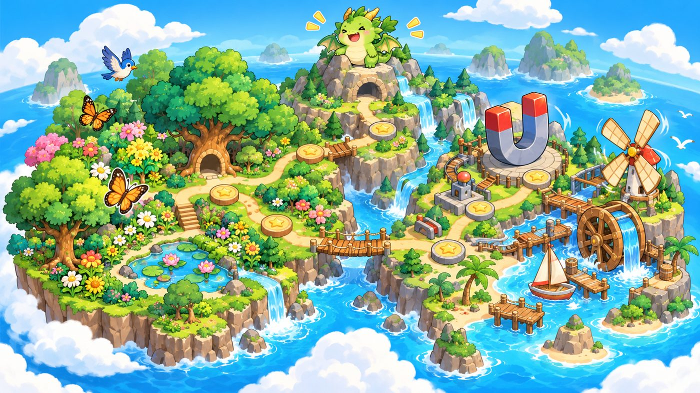

<!doctype html>
<html lang="zh-Hant">
<head>
<meta charset="utf-8">
<meta name="viewport" content="width=device-width,initial-scale=1,viewport-fit=cover">
<title>三上自然闖關島</title>
<meta name="claude:viewport-fit-sides" content="cover">
<link rel="preconnect" href="https://fonts.googleapis.com">
<link rel="preconnect" href="https://fonts.gstatic.com" crossorigin>
<link rel="stylesheet" href="https://fonts.googleapis.com/css2?family=Huninn&family=Noto+Sans+TC:wght@500;700;900&display=swap">
<style>
/* Layout: a board-game island map — chunky sticker tiles with offset ink shadows on a dotted field-notebook ground; one column, centered, phone-first. Deliberately single light theme (bright classroom game). */
:root{
  color-scheme: light;
  --bg:#E4F3EC; --dot:#C3E2D3; --paper:#FFFFFF; --ink:#1E2B38; --muted:#56687A;
  --leaf:#2E9B5A; --leaf-soft:#D4F1DF; --leaf-deep:#1F7443;
  --n:#E2483B; --n-soft:#FCE1DE; --s:#2D6BDB; --s-soft:#DDE8FB;
  --sun:#FFC63A; --sun-soft:#FFF1C9; --soil:#C79A66;
  --k1:#E2483B; --k2:#2D6BDB; --k3:#D99A00; --k4:#2E9B5A;
  --good:#2E9B5A; --bad:#E2483B;
  --font-display:'Huninn','Noto Sans TC','PingFang TC','Microsoft JhengHei',sans-serif;
  --font-body:'Noto Sans TC','PingFang TC','Microsoft JhengHei',sans-serif;
  --r:18px; --bw:3px; --sh:0 5px 0 var(--ink);
}
*{box-sizing:border-box}
html,body{min-height:100%}
body{background-color:var(--bg);background-image:radial-gradient(var(--dot) 1.3px,transparent 1.4px);background-size:22px 22px;color:var(--ink);font-family:var(--font-body);font-size:18px;line-height:1.6;-webkit-tap-highlight-color:transparent}
.wrap{max-width:860px;margin:0 auto;padding-block:12px 64px;padding-left:max(16px,env(safe-area-inset-left,0px));padding-right:max(16px,env(safe-area-inset-right,0px))}
h1,h2,h3,.disp{font-family:var(--font-display);font-weight:400;text-wrap:balance;margin:0;line-height:1.25}
button{font:inherit;color:inherit;cursor:pointer}
button:focus-visible,input:focus-visible,.node:focus-visible{outline:4px solid var(--sun);outline-offset:3px}
.tile{background:var(--paper);border:var(--bw) solid var(--ink);border-radius:var(--r);box-shadow:var(--sh)}
.btn{display:inline-flex;align-items:center;justify-content:center;gap:8px;min-height:52px;padding:8px 22px;border:var(--bw) solid var(--ink);border-radius:999px;background:var(--paper);box-shadow:0 4px 0 var(--ink);font-family:var(--font-display);font-size:20px;transition:transform .08s,box-shadow .08s}
.btn:active{transform:translateY(4px);box-shadow:0 0 0 var(--ink)}
.btn.go{background:var(--sun)}
.btn.green{background:var(--leaf);color:#fff}
.btn.red{background:var(--n);color:#fff}
.btn.blue{background:var(--s);color:#fff}
.btn.small{min-height:42px;font-size:17px;padding:4px 16px}
.btn[disabled]{opacity:.45;pointer-events:none}
.row{display:flex;flex-wrap:wrap;gap:12px;align-items:center}
.center{text-align:center}
.muted{color:var(--muted)}
.kw{background:linear-gradient(transparent 55%,var(--sun-soft) 55%);font-weight:900}
/* top bar */
.top{position:sticky;top:env(safe-area-inset-top,0px);z-index:20;display:flex;align-items:center;gap:10px;padding:10px 0;margin-bottom:8px;background:var(--bg)}
body::before{content:"";position:fixed;inset:0 0 auto;height:env(safe-area-inset-top,0px);z-index:30;background:var(--bg)}
.top .ttl{flex:1;min-width:0;font-family:var(--font-display);font-size:21px;white-space:nowrap;overflow:hidden;text-overflow:ellipsis}
.iconbtn{width:48px;height:48px;border-radius:50%;border:var(--bw) solid var(--ink);background:var(--paper);box-shadow:0 3px 0 var(--ink);display:grid;place-items:center;font-size:22px;flex:none}
.iconbtn:active{transform:translateY(3px);box-shadow:none}
.starpill{display:inline-flex;align-items:center;gap:6px;padding:6px 14px;border:var(--bw) solid var(--ink);border-radius:999px;background:var(--sun);font-family:var(--font-display);font-size:19px;font-variant-numeric:tabular-nums;flex:none}
/* home */
.hero{padding:22px 4px 6px;display:grid;gap:10px}
.hero .eyebrow{font-weight:900;letter-spacing:.12em;color:var(--leaf-deep);font-size:15px}
.hero h1{font-size:clamp(40px,9vw,66px);letter-spacing:.02em}
.hero h1 .n{color:var(--n)} .hero h1 .s{color:var(--s)} .hero h1 .l{color:var(--leaf)}
.profile{display:grid;grid-template-columns:auto 1fr;gap:14px;align-items:center;padding:16px;margin-top:8px}
.profile .badge{width:74px;height:74px;border-radius:50%;border:var(--bw) solid var(--ink);display:grid;place-items:center;font-size:40px;background:var(--leaf-soft)}
.profile input{width:100%;font:inherit;font-family:var(--font-display);font-size:22px;border:none;border-bottom:3px dashed var(--muted);background:transparent;padding:2px 0;color:var(--ink);min-width:0}
.ranks{display:grid;grid-template-columns:repeat(5,1fr);gap:4px;padding:10px 8px;margin-top:14px}
.rk{display:grid;justify-items:center;gap:0;text-align:center;font-size:13px;line-height:1.3;filter:grayscale(1);opacity:.45}
.rk.got{filter:none;opacity:1}
.rk img{max-width:100%}
.rk span{color:var(--muted);font-weight:700;font-size:12px}
.rankbar{height:16px;border:2px solid var(--ink);border-radius:999px;background:var(--paper);overflow:hidden;margin-top:6px}
.rankbar i{display:block;height:100%;background:repeating-linear-gradient(45deg,var(--leaf) 0 10px,#3FB06B 10px 20px)}
.units{display:grid;grid-template-columns:repeat(auto-fit,minmax(260px,1fr));gap:18px;margin-top:22px}
.ucard{position:relative;overflow:hidden;padding:20px;text-align:left;display:grid;gap:8px;transition:transform .12s}
.ucard:hover{transform:translateY(-3px)}
.ucard .art{font-size:62px;line-height:1}
.heroimg{width:100%;aspect-ratio:16/9;object-fit:cover;border:var(--bw) solid var(--ink);border-radius:var(--r);box-shadow:var(--sh);margin-top:6px;background:#8fd3f5}
.cover{width:100%;aspect-ratio:16/9;object-fit:cover;border:2px solid var(--ink);border-radius:12px;background:#8fd3f5}
.ucard h2{font-size:28px}
.ucard.u1{background:var(--leaf-soft)} .ucard.u2{background:linear-gradient(90deg,var(--n-soft) 50%,var(--s-soft) 50%)}
.ucard .prog{font-weight:700;color:var(--muted);font-size:16px}
.ucard.final{background:var(--sun-soft)}
.ucard.locked{filter:grayscale(.8);opacity:.7}
.foot{margin-top:28px;display:flex;flex-wrap:wrap;gap:10px;justify-content:center}
/* map path */
.unithead{padding:14px 18px;display:grid;gap:4px;margin-bottom:8px}
.unithead h2{font-size:30px}
.path{display:grid;gap:14px;padding:6px 0 20px;justify-items:center}
.actbanner{justify-self:stretch;text-align:center;margin:14px 0 4px;font-family:var(--font-display);font-size:21px;padding:8px 14px;border-radius:12px;border:var(--bw) solid var(--ink);background:var(--ink);color:var(--paper)}
.node{display:grid;grid-template-columns:auto 1fr;align-items:center;gap:14px;width:min(100%,430px);padding:10px 14px;text-align:left;background:var(--paper);border:var(--bw) solid var(--ink);border-radius:var(--r);box-shadow:var(--sh)}
.node:nth-of-type(odd){transform:translateX(-18px)} .node:nth-of-type(even){transform:translateX(18px)}
@media (max-width:520px){.node:nth-of-type(n){transform:none}}
.node .dot{width:62px;height:62px;border-radius:50%;border:var(--bw) solid var(--ink);display:grid;place-items:center;font-family:var(--font-display);font-size:22px;background:var(--leaf-soft)}
.node.game .dot{background:var(--sun);font-size:30px;border-radius:16px;transform:rotate(-6deg)}
.node.boss .dot{background:var(--n-soft);font-size:32px;overflow:hidden}
.node .nt{font-family:var(--font-display);font-size:21px;line-height:1.25}
.node .ns{font-size:15px;color:var(--muted);font-weight:700}
.node.locked{opacity:.55;box-shadow:0 5px 0 var(--muted);border-style:dashed}
.node.locked .dot{background:#E9EEF1}
.node.done .dot{background:var(--leaf);color:#fff}
.stars{color:var(--k3);letter-spacing:2px;font-size:18px}
.stars .off{color:#C8D1D8}
/* knowledge cards */
.kcard{padding:22px 20px;display:grid;gap:14px;min-height:340px;align-content:start}
.kcard .kicon{font-size:52px;line-height:1}
.kcard h3{font-size:26px}
.kcard ul{margin:0;padding-left:1.2em;display:grid;gap:8px}
.kcard p{margin:0}
.tip{border:2px dashed var(--leaf);background:var(--leaf-soft);border-radius:12px;padding:10px 14px;font-weight:700}
.tip.blue{border-color:var(--s);background:var(--s-soft)}
.figs{display:flex;flex-wrap:wrap;gap:12px;justify-content:center}
.fig{display:grid;justify-items:center;gap:2px;font-weight:700;font-size:16px}
.fig svg{width:120px;height:auto}
.tbl{overflow-x:auto}
.tbl table{border-collapse:collapse;width:100%;font-size:16px;min-width:380px}
.tbl th,.tbl td{border:2px solid var(--ink);padding:6px 8px;text-align:center}
.tbl th{background:var(--sun-soft)}
.rep table{min-width:0}.rep td:last-child{white-space:nowrap;width:1%}.rep .stars{font-size:16px;letter-spacing:0}
.dots{display:flex;gap:8px;justify-content:center;margin:14px 0}
.dots i{width:12px;height:12px;border-radius:50%;background:#C8D1D8;border:2px solid var(--ink)}
.dots i.on{background:var(--ink)}
.navrow{display:flex;justify-content:space-between;gap:10px;flex-wrap:wrap}
/* quiz */
.qhead{display:flex;flex-wrap:wrap;gap:10px;align-items:center;justify-content:space-between;margin-bottom:10px}
.chip{display:inline-flex;align-items:center;gap:6px;padding:4px 12px;border-radius:999px;border:2px solid var(--ink);background:var(--paper);font-weight:900;font-size:16px;font-variant-numeric:tabular-nums}
.chip.fire{background:var(--sun)}
.qbox{padding:20px;display:grid;gap:14px}
.qtext{font-size:24px;font-weight:700;line-height:1.5;display:flex;gap:10px;align-items:flex-start}
.qtext span{flex:1;min-width:0}
.say{flex:none;width:44px;height:44px;border-radius:50%;border:2px solid var(--ink);background:var(--sun-soft);font-size:20px}
.visual{display:flex;justify-content:center;flex-wrap:wrap;gap:10px}
.opts{display:grid;grid-template-columns:1fr 1fr;gap:12px;margin-top:14px}
@media (max-width:560px){.opts{grid-template-columns:1fr}}
.opt{position:relative;display:flex;align-items:center;gap:12px;min-height:76px;padding:12px 16px;border-radius:16px;border:var(--bw) solid var(--ink);box-shadow:0 5px 0 var(--ink);color:#fff;font-weight:700;font-size:21px;text-align:left;transition:transform .08s,opacity .2s}
.opt:active{transform:translateY(5px);box-shadow:none}
.opt .shape{flex:none;font-size:24px;width:30px;text-align:center}
.opt .ot{flex:1;min-width:0}
.opt.c0{background:var(--k1)} .opt.c1{background:var(--k2)} .opt.c2{background:var(--k3)} .opt.c3{background:var(--k4)}
.opt.tfo{background:var(--k4);justify-content:center;font-size:30px;min-height:100px}
.opt.tfx{background:var(--k1);justify-content:center;font-size:30px;min-height:100px}
.opt.dim{opacity:.3}
.opt.right{outline:5px solid var(--sun);outline-offset:2px}
.opt.right::after{content:"✔";position:absolute;right:12px;top:8px;font-size:26px}
.opt .ot .mag{vertical-align:middle}
.fb{margin-top:16px;padding:16px 18px;display:grid;gap:8px;animation:pop .25s ease-out}
.fb.ok{background:var(--leaf-soft)} .fb.no{background:var(--n-soft)}
.fb .big{font-family:var(--font-display);font-size:28px}
.timer{height:14px;border:2px solid var(--ink);border-radius:999px;background:var(--paper);overflow:hidden}
.timer i{display:block;height:100%;background:var(--leaf);transition:width .1s linear}
.timer i.warn{background:var(--n)}
.boss{display:grid;grid-template-columns:auto 1fr;gap:14px;align-items:center;padding:12px 16px;margin-bottom:12px}
.boss .face{font-size:58px;line-height:1}
.boss .face.hit{animation:hit .4s}
.hp{height:20px;border:2px solid var(--ink);border-radius:999px;background:var(--paper);overflow:hidden}
.hp i{display:block;height:100%;background:linear-gradient(90deg,var(--n),#FF7A5C);transition:width .5s}
.teamnow{font-family:var(--font-display);font-size:24px;padding:6px 18px;border-radius:999px;border:var(--bw) solid var(--ink);color:#fff}
.board{display:grid;gap:8px}
.board .bar{display:grid;grid-template-columns:110px 1fr auto;gap:10px;align-items:center;font-weight:900}
.board .bar b{display:block;height:30px;border:2px solid var(--ink);border-radius:8px;transition:width .6s}
.podium{display:flex;justify-content:center;align-items:flex-end;gap:10px;margin:16px 0}
.podium div{display:grid;justify-items:center;align-content:end;gap:4px;width:110px;border:var(--bw) solid var(--ink);border-radius:14px 14px 0 0;color:#fff;font-weight:900;padding:8px}
/* results */
.result{padding:24px 20px;display:grid;gap:14px;justify-items:center;text-align:center}
.result .bigstars{font-size:56px;letter-spacing:6px;color:var(--k3)}
.result .bigstars .off{color:#C8D1D8}
.review{display:grid;gap:10px;width:100%;text-align:left}
.review .it{border:2px solid var(--ink);border-radius:12px;padding:10px 14px;background:var(--n-soft);font-size:16px}
/* games */
.gamebox{padding:18px;display:grid;gap:14px}
.ghead{display:flex;flex-wrap:wrap;gap:8px;justify-content:space-between;align-items:center}
.sortitem{justify-self:center;display:grid;justify-items:center;gap:4px;padding:16px 26px;min-width:200px;border:var(--bw) solid var(--ink);border-radius:20px;background:var(--sun-soft);box-shadow:var(--sh);animation:pop .25s}
.sortitem .e{font-size:64px;line-height:1}
.sortitem .t{font-family:var(--font-display);font-size:26px}
.buckets{display:grid;grid-template-columns:repeat(auto-fit,minmax(130px,1fr));gap:12px}
.bucket{display:grid;justify-items:center;gap:2px;padding:14px 8px;border:var(--bw) solid var(--ink);border-radius:16px;background:var(--paper);box-shadow:0 5px 0 var(--ink);font-family:var(--font-display);font-size:21px}
.bucket .e{font-size:36px;line-height:1.1}
.bucket .cnt{font-family:var(--font-body);font-size:14px;color:var(--muted);font-weight:700}
.bucket:active{transform:translateY(5px);box-shadow:none}
.shake{animation:shake .4s}
.diagram{display:flex;justify-content:center}
.diagram svg{width:min(100%,420px);height:auto;touch-action:manipulation}
.mk{cursor:pointer}
.mk circle.ring{fill:#fff;stroke:var(--ink);stroke-width:3}
.mk text{font-family:var(--font-display);font-size:16px;fill:var(--ink);pointer-events:none}
.mk.ok circle.ring{fill:var(--leaf)}
.mk.ok text{fill:#fff}
.mk .lab{font-family:var(--font-display);font-size:17px;fill:var(--ink);paint-order:stroke;stroke:#fff;stroke-width:5px}
.mk.pulse circle.ring{animation:pulse 1.2s infinite}
.prompt{font-family:var(--font-display);font-size:26px;text-align:center}
.prompt b{color:var(--n);font-weight:400}
.mem{display:grid;grid-template-columns:repeat(4,1fr);gap:10px}
@media (max-width:560px){.mem{grid-template-columns:repeat(3,1fr)}}
.card{position:relative;aspect-ratio:3/4;max-width:100%;perspective:600px;border:none;background:none;padding:0}
.card .in{position:absolute;inset:0;transition:transform .35s;transform-style:preserve-3d}
.card.up .in,.card.got .in{transform:rotateY(180deg)}
.card .fc,.card .bc{position:absolute;inset:0;border:var(--bw) solid var(--ink);border-radius:14px;backface-visibility:hidden;-webkit-backface-visibility:hidden;display:grid;place-items:center;align-content:center;gap:4px;padding:6px;text-align:center}
.card .fc{background:repeating-linear-gradient(45deg,var(--leaf) 0 12px,#3FB06B 12px 24px);font-size:34px;color:#fff;font-family:var(--font-display)}
.card .bc{background:var(--paper);transform:rotateY(180deg);font-weight:900;font-size:17px;line-height:1.3}
.card .bc .e{font-size:30px}
.card.got .bc{background:var(--leaf-soft)}
.holes{display:grid;grid-template-columns:repeat(3,1fr);gap:12px}
.hole{position:relative;aspect-ratio:1/1;max-width:100%;border-radius:50%;border:var(--bw) solid var(--ink);background:radial-gradient(circle at 50% 70%,#6B4E33 0 45%,var(--soil) 46%);overflow:hidden}
.pop{position:absolute;inset:8%;border-radius:50%;border:var(--bw) solid var(--ink);background:var(--paper);display:grid;place-items:center;align-content:center;gap:0;animation:rise .18s ease-out;padding:0}
.pop .e{font-size:clamp(28px,8vw,46px);line-height:1}
.pop .ico{width:92%;height:74%;background:none}
.pop{background:rgba(255,255,255,.85)}
.pop .t{background:#fff;border:2px solid var(--ink);border-radius:999px;padding:0 6px}
.hole{background:url(img/hole.png) center 70%/96% auto no-repeat,radial-gradient(circle at 50% 60%,#EAD9BE 0 58%,transparent 59%);border:none}
.pop .t{font-weight:900;font-size:clamp(12px,3.4vw,16px);line-height:1.1}
.pop.caught{animation:fly .45s forwards;background:var(--leaf-soft)}
.pop.miss{background:var(--n-soft);animation:shake .4s}
.float{position:absolute;left:50%;top:10%;transform:translateX(-50%);font-family:var(--font-display);font-size:22px;pointer-events:none;animation:up .8s forwards;white-space:nowrap}
.train{display:flex;align-items:center;gap:0;overflow-x:auto;padding:16px 4px 10px}
.train.go .cars{animation:drive 1.4s ease-in forwards}
.cars{display:flex;align-items:center}
.engine{font-size:58px;line-height:1;flex:none}
.car{flex:none;display:grid;justify-items:center;gap:4px;background:none;border:none;padding:0}
.car .lk{font-size:14px;font-weight:900;height:20px}
.link{flex:none;width:30px;display:grid;place-items:center;font-weight:900;font-size:13px;line-height:1.1;text-align:center}
.link.ok{color:var(--leaf-deep)} .link.ok::before{content:"";display:block;width:26px;height:6px;background:var(--leaf);border-radius:3px}
.link.no{width:54px;color:var(--n)}
.mag{display:inline-flex;border:var(--bw) solid var(--ink);border-radius:8px;overflow:hidden;font-family:var(--font-display);color:#fff;font-size:20px;line-height:1}
.mag .p{display:grid;place-items:center;width:44px;height:38px}
.mag .pN{background:var(--n)} .mag .pS{background:var(--s)}
.car .mag .p{width:52px;height:48px;font-size:26px}
.magpair{display:inline-flex;align-items:center;gap:6px}
.mrow{display:flex;align-items:flex-end;justify-content:safe center;overflow-x:auto;padding:8px 2px 12px}
.mcol{display:flex;flex-direction:column;align-items:center;padding:8px 2px}
.mbox{flex:none;display:grid;justify-items:center;gap:4px;background:none;border:none;padding:0;font-weight:900;font-size:15px}
.mbox{position:relative;z-index:1}
.mbox .dc{font-size:18px;line-height:1;min-height:20px}
.dci{width:88px;height:58px;object-fit:contain;display:block}
.mbox .lk{font-size:13px;color:var(--muted);min-height:18px}
.mbox[disabled]{opacity:1;cursor:default}
.mag.v{flex-direction:column}
.mag.v .p{width:96px;height:40px}
.mrow .mag .p{width:40px;height:46px;font-size:24px}
.jn{flex:none;width:44px;display:grid;justify-items:center;gap:2px;font-size:13px;font-weight:900;line-height:1.15;align-self:center;margin-top:30px}
.mcol .jn{width:auto;grid-auto-flow:column;gap:8px;margin:0;padding:6px 0;font-size:15px}
.jn .rq{padding:2px 6px;border-radius:8px;border:2px solid var(--ink);background:var(--paper)}
.jn .st{font-size:15px}
.jn.ok .st{color:var(--leaf-deep)} .jn.no .st{color:var(--n)}
.mcol .jn.ok.R{padding:22px 0}
.rule{display:grid;gap:6px;font-size:16px}
@media (max-width:560px){.mrow .mag .p{width:25px;height:36px;font-size:17px}.jn{width:31px;font-size:11px}.jn .rq{padding:1px 2px}.jn .st{font-size:12px}.mbox .dc{font-size:16px}.dci{width:66px;height:46px}.mbox .lk{font-size:11px}}
.phs{display:grid;grid-template-columns:repeat(auto-fit,minmax(130px,1fr));gap:10px}
.ph{margin:0;display:grid;gap:4px;align-content:start;text-align:center;font-size:15px;font-weight:700;color:var(--muted)}
.ph img{width:100%;height:150px;object-fit:contain;background:#fff;border:2px solid var(--ink);border-radius:12px}
.dlab{font-family:var(--font-display);font-size:21px;fill:var(--ink);paint-order:stroke;stroke:#fff;stroke-width:6px}
.ico{width:130px;height:130px;object-fit:contain;border-radius:12px;background:#fff;vertical-align:middle}
.card .bc .e{display:grid;place-items:center;width:100%;height:56%}.card .bc .ico{width:100%;height:100%;object-fit:contain;background:none}
@media (max-width:560px){.car .mag .p{width:36px;height:40px;font-size:20px}.engine{font-size:44px}.link{width:22px}.link.no{width:40px}.car .lk{font-size:12px}}
.field{width:100%;height:auto;border:var(--bw) solid var(--ink);border-radius:16px;touch-action:none;background:#4CAF62}
.sliders{display:grid;grid-template-columns:repeat(auto-fit,minmax(220px,1fr));gap:12px}
.sliders label{display:grid;gap:4px;font-weight:900}
.sliders input{width:100%;accent-color:var(--n)}
/* settings */
.set{padding:18px;display:grid;gap:14px}
.set label{display:flex;gap:12px;align-items:center;font-weight:700}
.set input[type=checkbox]{width:26px;height:26px;accent-color:var(--leaf)}
.confirm{border:2px dashed var(--n);border-radius:12px;padding:12px;background:var(--n-soft)}
/* confetti */
.cf{position:fixed;top:-20px;width:10px;height:16px;z-index:50;pointer-events:none;animation:fall linear forwards}
@keyframes pop{from{transform:scale(.85);opacity:0}to{transform:scale(1);opacity:1}}
@keyframes shake{0%,100%{transform:translateX(0)}20%{transform:translateX(-8px)}40%{transform:translateX(8px)}60%{transform:translateX(-6px)}80%{transform:translateX(6px)}}
@keyframes hit{0%{transform:scale(1)}30%{transform:scale(.8) rotate(-12deg);filter:brightness(2)}100%{transform:scale(1)}}
@keyframes pulse{0%,100%{stroke-width:3}50%{stroke-width:6}}
@keyframes rise{from{transform:translateY(100%)}to{transform:translateY(0)}}
@keyframes fly{to{transform:translateY(-120%) scale(.5);opacity:0}}
@keyframes up{to{transform:translate(-50%,-50px);opacity:0}}
@keyframes drive{to{transform:translateX(120vw)}}
@keyframes fall{to{transform:translateY(110vh) rotate(720deg)}}
@media (prefers-reduced-motion:reduce){*{animation-duration:.01ms!important;transition-duration:.01ms!important}}
</style>

</head>
<body>
<div class="wrap" id="app"></div>

<script>
/* ============ 小工具：圖示 ============ */
const mag=(l,r)=>`<span class="mag"><span class="p p${l}">${l}</span><span class="p p${r}">${r}</span></span>`;
const pair=(a,b)=>`<span class="magpair">${mag(a[0],a[1])}${mag(b[0],b[1])}</span>`;
function arrowBall(len,dir){ // dir: right/up/down
  const w=len+70;
  if(dir==='up'){return `<svg viewBox="0 0 80 ${len+70}" width="60"><line x1="40" y1="${len+40}" x2="40" y2="22" stroke="#E2483B" stroke-width="6"/><path d="M28 26 L40 6 L52 26Z" fill="#E2483B"/><circle cx="40" cy="${len+48}" r="18" fill="#FFC63A" stroke="#1E2B38" stroke-width="3"/></svg>`}
  return `<svg viewBox="0 0 ${w} 50" width="${Math.min(w,240)}" height="44"><circle cx="22" cy="25" r="18" fill="#FFC63A" stroke="#1E2B38" stroke-width="3"/><line x1="40" y1="25" x2="${w-18}" y2="25" stroke="#E2483B" stroke-width="6"/><path d="M${w-22} 13 L${w-2} 25 L${w-22} 37Z" fill="#E2483B"/></svg>`;
}
function clay(shape){
  const c='fill="#B9A3E3" stroke="#1E2B38" stroke-width="3"';
  const water='<rect x="0" y="52" width="100" height="28" fill="#BFE3F7"/>';
  let s='';
  if(shape==='ball') s=`<circle cx="50" cy="40" r="20" ${c}/>`;
  if(shape==='cube') s=`<rect x="32" y="22" width="36" height="36" rx="3" ${c}/>`;
  if(shape==='stick') s=`<rect x="14" y="34" width="72" height="16" rx="8" ${c}/>`;
  if(shape==='bowl') s=`<path d="M14 34 Q50 82 86 34 L78 34 Q50 66 22 34Z" ${c}/>`;
  return `<svg viewBox="0 0 100 80" width="100">${water}${s}</svg>`;
}
const IMG=k=>`img/${k}.jpg`;
const ph=(k,cap)=>`<figure class="ph">${cap?`<figcaption>${cap}</figcaption>`:''}</figure>`;
const phs=(...a)=>`<div class="phs">${a.join('')}</div>`;
const bossImg=(k,down,px)=>``;
const ico=e=>e[0]==='@'?``:e;
/* 圖解：課本的長春花（全株＋果實放大）與杜鵑花 */
const PLANT_VB='0 0 420 460', FLOWER_VB='0 0 386 450';
function plantArt(){return `<rect width="420" height="460" fill="#fff"/><image href="${IMG('plant')}" x="0" y="10" width="270" height="440"/><rect x="283" y="28" width="134" height="118" rx="10" fill="#fff" stroke="#1E2B38" stroke-width="3"/><image href="${IMG('vfruit')}" x="285" y="30" width="130" height="114"/><text x="350" y="168" text-anchor="middle" font-size="15" fill="#56687A" font-weight="700">放大照片 1</text><rect x="283" y="248" width="134" height="133" rx="10" fill="#fff" stroke="#1E2B38" stroke-width="3"/><image href="${IMG('vseed')}" x="285" y="250" width="130" height="129"/><text x="350" y="403" text-anchor="middle" font-size="15" fill="#56687A" font-weight="700">放大照片 2</text>`}
function flowerArt(){return `<rect width="386" height="450" fill="#fff"/><image href="${IMG('azalea')}" x="0" y="0" width="386" height="450"/>`}
const PLANT_PTS=[{k:'花',x:113,y:67},{k:'葉',x:68,y:173},{k:'莖',x:131,y:300},{k:'根',x:122,y:393},{k:'果實',x:357,y:87},{k:'種子',x:344,y:330}];
const FLOWER_PTS=[{k:'花萼',x:205,y:288},{k:'花瓣',x:108,y:135},{k:'雄蕊',x:149,y:189},{k:'雌蕊',x:199,y:128}];
function labeled(kind){const pl=kind==='plant',pts=pl?PLANT_PTS:FLOWER_PTS;return `<svg viewBox="${pl?PLANT_VB:FLOWER_VB}" role="img" aria-label="${pl?'長春花的構造':'杜鵑花的構造'}">${pl?plantArt():flowerArt()}${pts.map(p=>{const r=p.x>250;return `<circle cx="${p.x}" cy="${p.y}" r="7" fill="#FFC63A" stroke="#1E2B38" stroke-width="2.5"/><text class="dlab" x="${r?p.x-12:p.x+12}" y="${p.y+7}" text-anchor="${r?'end':'start'}">${p.k}</text>`}).join('')}</svg>`}

/* ============ 題庫與重點 ============ */
const tf=(q,ans,ex)=>({tf:ans,q,ex});
const mc=(q,o,a,ex,v)=>({q,o,a,ex,v});

const UNITS=[
{id:'u1',no:'第一單元',name:'多采多姿的植物',art:'🌳',cls:'u1',
 boss:{name:'枯葉巨人',face:'🍂'},
 acts:[
 {name:'活動一　植物是什麼',items:[
  {id:'u1s1',code:'1-1',title:'校園大探索',cards:[
   {i:'🔍',h:'生物和非生物',b:`<ul><li>有生命的叫<span class="kw">生物</span>：會<b>長大</b>、會<b>死亡</b>，也能<b>繁殖</b>後代。</li><li>沒有生命的叫<span class="kw">非生物</span>：例如石頭、單槓、鐵椅、籃球。</li></ul><div class="tip">口訣：會長大、會死亡、會繁殖 → 生物！</div>${ph('campus','校園裡有生物，也有非生物')}`},
   {i:'🦋',h:'生物分成動物和植物',b:`<ul><li><span class="kw">動物</span>：會到處移動、會吃東西。例如蝴蝶、鳥、魚。</li><li><span class="kw">植物</span>：不會移動，但會慢慢長大。例如榕樹、仙丹花、樟樹。</li><li>植物也是<b>生物</b>喔！不會移動不代表沒有生命。</li></ul>${ph('butterfly','蝴蝶（動物）和花（植物）都是生物')}`},
   {i:'⚠️',h:'觀察時要注意',b:`<ul><li>注意安全，<b>不要任意捕捉或採摘</b>動植物。</li><li>不要觸摸長有尖刺或會分泌乳汁的植物。</li></ul>`}],
   quiz:[
   mc('下列哪一種東西不會長大，也不會繁殖？',['蜜蜂','石頭','樟樹','仙丹花'],1,'石頭沒有生命，是非生物，所以不會長大也不會繁殖。'),
   tf('校園中的長春花不會移動，所以是沒有生命的非生物。',false,'長春花是植物，植物是生物。不會移動不代表沒有生命。'),
   mc('下列關於動物和植物的敘述，哪一項正確？',['植物都長得比動物高','動物會移動，植物不會移動','動物會長大，植物不會長大','動物是生物，植物是非生物'],1,'動物會到處移動；植物不會移動，但會慢慢長大，兩者都是生物。'),
   tf('觀察校園中的動物和植物時，不要任意捕捉或採摘。',true,'動植物都有生命，要好好愛護。'),
   mc('小文在校園看到下面這些東西，哪一個是「動物」？',['木棉樹','籃球','麻雀','繁星花'],2,'麻雀會飛、會吃東西，是動物。木棉樹、繁星花是植物；籃球是非生物。')]},
  {id:'u1s2',code:'1-2',title:'植物的身體',cards:[
   {i:'🌱',h:'植物身體的六大構造',b:`<p>植物的身體大部分可以分成：</p><p class="disp" style="font-size:26px">根・莖・葉・花・果實・種子</p><div class="diagram">${labeled('plant')}</div><p class="center muted" style="margin:0;font-size:15px">長春花全株，右邊是它的果實放大照片</p><div class="tip">花開完會長出果實，果實成熟後，裡面有種子。</div>`},
   {i:'🌳',h:'每種植物外形都不一樣',b:`<ul><li><b>榕樹、黑板樹</b>長得很高大。</li><li><b>長春花</b>長得矮小。</li><li><b>牽牛花</b>的莖不能直立，要爬在竹竿上。</li><li>雖然外形不同，但幾乎都看得到<span class="kw">莖和葉</span>。</li></ul>${phs(ph('banyan','榕樹：高大'),ph('vinca','長春花：矮小'),ph('mglory','牽牛花：爬竹竿'))}`},
   {i:'🗓️',h:'不是隨時都看得到花和果實',b:`<p>花和果實要在<b>特定的季節</b>才看得到，所以觀察校園植物時，不一定每一種都能同時看到根、莖、葉、花、果實和種子。</p>`}],
   quiz:[
   mc('觀察校園植物時，幾乎所有植物都可以觀察到哪些構造？',['莖、葉','葉、花','花、果實','果實、種子'],0,'莖和葉幾乎一年四季都看得到；花和果實要看季節。'),
   tf('觀察校園中的植物，發現所有植物都可以看到根、莖、葉、花、果實和種子。',false,'花和果實要在特定季節才看得到，根也常常埋在土裡。'),
   mc('植物的果實成熟後，可以在果實裡面找到什麼？',['莖','根','葉','種子'],3,'果實裡面有種子。'),
   mc('下列哪一種植物和榕樹一樣長得很高大？',['大花咸豐草','牽牛花','長春花','黑板樹'],3,'黑板樹是高大的樹木；其他三種都比較矮小。'),
   tf('植物都具有根、莖和葉，所以它們的外形都長得一模一樣。',false,'每種植物的外形都不一樣，例如榕樹高大、長春花矮小。')]},
  {id:'u1g1',game:'sortLife',code:'🎮',title:'生物分類站',sub:'把東西送到正確的站'},
  {id:'u1g2',game:'labelPlant',code:'🎮',title:'植物組裝工廠',sub:'找出植物的六大構造'}
 ]},
 {name:'活動二　植物如何獲取陽光和水',items:[
  {id:'u1s3',code:'2-1',title:'植物的葉',cards:[
   {i:'🍃',h:'看葉子的三個重點',b:`<ul><li><span class="kw">葉形</span>：葉子的形狀，例如心形、橢圓形、掌形。</li><li><span class="kw">葉緣</span>：葉子的邊緣，例如平滑完整、鋸齒狀、波浪狀。</li><li><span class="kw">葉脈</span>：葉面上的脈紋，分成網狀脈和平行脈。</li></ul>${phs(ph('leaf-palm','網狀脈：像交錯的網子'),ph('vein-par','平行脈：一條一條直線'))}`},
   {i:'📋',h:'常見葉子比一比',b:`${phs(ph('leaf-heart','番薯葉・心形'),ph('leaf-ellip','橢圓形・鋸齒緣'),ph('leaf-palm','青楓葉・鋸齒緣'),ph('leaf-lily','百合葉・披針形'))}<div class="tbl"><table><tr><th>葉子</th><th>葉形</th><th>葉緣</th><th>葉脈</th></tr><tr><td>番薯葉</td><td>心形</td><td>平滑完整</td><td>網狀脈</td></tr><tr><td>桂花葉</td><td>橢圓形</td><td>鋸齒緣</td><td>網狀脈</td></tr><tr><td>青楓葉</td><td>掌形</td><td>鋸齒緣</td><td>網狀脈</td></tr><tr><td>百合葉</td><td>披針形</td><td>平滑完整</td><td>平行脈</td></tr></table></div><p class="muted">還有：樟樹葉葉緣像波浪；朱槿葉有鋸齒、形狀像雞蛋。</p>`},
   {i:'🌿',h:'葉序：葉子怎麼排隊',b:`<p>葉子在莖上的生長位置叫作<span class="kw">節</span>。</p>${phs(ph('ord-alt','互生：一個節 1 片'),ph('ord-opp','對生：一個節 2 片'),ph('ord-whorl','輪生：一個節 3 片以上'))}<p>例：樟樹＝互生、馬纓丹＝對生、黑板樹和軟枝黃蟬＝輪生。</p>`},
   {i:'☀️',h:'為什麼葉子要錯開長？',b:`<p>相鄰兩節的葉子會<b>錯開生長</b>，這樣每片葉子才能<span class="kw">照到更多陽光</span>。</p>`}],
   quiz:[
   mc('葉面上的脈紋稱為什麼？',['葉形','葉序','葉緣','葉脈'],3,'葉面上的脈紋叫葉脈；葉子的邊緣叫葉緣。'),
   tf('植物的葉子是從莖上的「節」長出來的。',true,'葉子在莖或枝條上的生長位置叫作節。'),
   mc('同一個節上長出 2 片葉子，這種葉序叫作什麼？',['互生','對生','輪生','平行'],1,'1 片＝互生，2 片＝對生，3 片以上＝輪生。'),
   mc('植物相鄰兩節的葉子會錯開生長，可能的原因是什麼？',['為了過濾灰塵','方便吸收水分','為了獲取更多陽光','為了繁衍後代'],2,'葉子錯開，才不會互相擋住，可以照到更多陽光。'),
   mc('百合葉的葉脈是一條一條的直線，屬於哪一種葉脈？',['網狀脈','平行脈','鋸齒脈','掌狀脈'],1,'一條一條直線的是平行脈。'),
   mc('青楓葉的葉子形狀像什麼？',['雞蛋','愛心','手掌','針'],2,'青楓葉是掌形，像手掌一樣。')]},
  {id:'u1s4',code:'2-2',title:'植物的莖',cards:[
   {i:'🪵',h:'莖的工作',b:`<p>莖可以<span class="kw">支撐植物的身體</span>，讓葉子往上長、<b>獲取陽光</b>。</p><p>莖分成三種：木本莖、草本莖、藤本莖。</p>`},
   {i:'🌳',h:'木本莖',b:`<p>例：樟樹、木棉樹、小葉欖仁</p><ul><li>褐色、<b>較粗</b>、摸起來<b>粗糙</b></li><li><b>堅硬</b>，可以直立，能長得比人高</li><li>表面可能有縱紋、皮孔；木棉樹還有<b>瘤刺</b></li></ul>${phs(ph('kapok','木棉樹'),ph('kapok-spine','木棉樹的瘤刺'),ph('camphor','樟樹的莖'))}`},
   {i:'🌼',h:'草本莖和藤本莖',b:`<ul><li><span class="kw">草本莖</span>（大花咸豐草）：綠色、細細的、較柔軟，<b>可以直立</b>，向四面八方長出分枝。</li><li><span class="kw">藤本莖</span>（牽牛花、絲瓜）：綠色、細軟，<b>不能直立</b>，要攀附在其他東西上往上爬。</li></ul><div class="tip">種絲瓜要搭棚架，就是因為它的莖太軟，站不起來！</div>${phs(ph('bidens','草本莖：大花咸豐草'),ph('mg-vine','藤本莖：牽牛花'),ph('loofah','藤本莖：絲瓜'))}`}],
   quiz:[
   mc('大花咸豐草的莖細細的，會向四面八方生長，能支撐植物直立，是哪一種莖？',['木本莖','草本莖','藤本莖','變態莖'],1,'細細軟軟、但能直立的是草本莖。'),
   tf('種植絲瓜時通常會搭設棚架，是因為絲瓜的莖較柔軟，無法支撐植物直立。',true,'絲瓜是藤本莖，需要攀附棚架往上長。'),
   mc('觀察小葉欖仁的莖，下列描述哪一個「不正確」？',['莖可以支撐植物直立','莖可以長得比人高','莖表面有皮孔','莖很柔軟'],3,'小葉欖仁是木本莖，堅硬不柔軟。'),
   tf('牽牛花的莖會攀附著物體生長，屬於不容易被風吹彎的木本莖。',false,'牽牛花是藤本莖，莖細軟、不能直立。'),
   tf('木棉樹的莖比較粗壯而且長得很高，表面還具有瘤刺。',true,'木棉樹是木本莖，表面有瘤刺。')]},
  {id:'u1s5',code:'2-3',title:'植物的根',cards:[
   {i:'💧',h:'根的工作',b:`<ul><li><b>抓住土壤</b>、<span class="kw">固定植物</span>，讓植物往上長、獲取陽光。</li><li><span class="kw">吸收水分</span>：所以澆水要澆在土壤上！</li></ul><div class="tip">實驗：植物澆水後恢復活力，是因為根把水吸進去了。</div>`},
   {i:'🥬',h:'軸根和鬚根',b:`${phs(ph('root-spinach','軸根：菠菜'),ph('root-scallion','鬚根：蔥'))}<ul><li><span class="kw">軸根</span>：有一條<b>比較粗的主根</b>，旁邊長細細的根。例：小白菜、莧菜、菠菜、芫荽（香菜）、九層塔。</li><li><span class="kw">鬚根</span>：沒有主根，根都<b>細細小小、像鬍鬚</b>。例：蒜、蔥、棕葉狗尾草（颱風草）、車前草。</li></ul>`},
   {i:'🌲',h:'根長多深？',b:`<p>榕樹的根長在很深的土裡，所以長得很高；牛筋草的根長在淺淺的土裡，長得矮矮的。</p>${ph('deeproot','大樹的根長在很深的土裡')}`}],
   quiz:[
   mc('下面哪一種植物的根是「軸根」？',['蒜：根粗細都差不多','蔥：根細細小小像鬍鬚','棕葉狗尾草：沒有比較粗的主根','菠菜：有一條比較粗的根，旁邊還有細根'],3,'有一條比較粗的主根，就是軸根。'),
   mc('觀察市場裡的蔬菜，下列哪一種蔬菜的根屬於鬚根？',['蒜','菠菜','莧菜','小白菜'],0,'蒜的根像鬍鬚一樣，是鬚根；其他三種是軸根。'),
   tf('植物的根能抓住土壤和吸收水分，但無法固定植物。',false,'根可以抓住土壤，就能固定植物。'),
   mc('幫植物澆水時，通常會把水澆在土壤上，因為水是由植物的哪一個構造吸收的？',['根','莖','葉','花'],0,'根負責吸收水分。'),
   tf('牛筋草的根主要在土壤的淺層生長，是屬於軸根植物。',false,'牛筋草的根細細的像鬍鬚，是鬚根。')]},
  {id:'u1g3',game:'sortRoot',code:'🎮',title:'根莖分類站',sub:'軸根、鬚根和三種莖'}
 ]},
 {name:'活動三　花、果實和種子有什麼功能',items:[
  {id:'u1s6',code:'3-1',title:'植物的花',cards:[
   {i:'🌸',h:'四季都有花',b:`<p>不同的花在不同季節開放：例如<b>杜鵑花春天</b>開、<b>梅花冬天</b>開。花並不是一年四季都會開喔！</p>${phs(ph('azalea-b','春：杜鵑花'),ph('daylily','夏：金針花'),ph('koelreut','秋：臺灣欒樹'),ph('plum','冬：梅花'))}`},
   {i:'🔬',h:'花的構造',b:`<div class="diagram">${labeled('flower')}</div><ul><li><span class="kw">花萼</span>：在花瓣外面、最下方，綠綠小小的，保護花。</li><li><span class="kw">花瓣</span>：通常顏色鮮豔，花的顏色就是花瓣的顏色。</li><li><span class="kw">雄蕊</span>：頂端有<b>花粉</b>。</li><li><span class="kw">雌蕊</span>：在花的最中間，通常只有一根。</li></ul>`},
   {i:'🐝',h:'花怎麼吸引動物？',b:`<ul><li>鮮豔的顏色（杜鵑）</li><li>特殊的氣味（月橘）</li><li>甜甜的花蜜</li></ul><p>動物來採食時會幫忙<span class="kw">傳播花粉</span>，讓植物繁衍後代。</p>${phs(ph('bee','蜜蜂來採花蜜'),ph('murraya','月橘：有特殊香味'))}`}],
   quiz:[
   mc('植物的花會吸引動物來採食，幫助傳播花粉。下列哪一項「不是」吸引動物的方法？',['有尖尖的針刺','有鮮豔的顏色','有特殊的氣味','有甜甜的花蜜'],0,'尖尖的針刺會讓動物不敢靠近，不是吸引動物的方法。'),
   mc('花粉位於花的哪一個部位？',['花萼','花瓣','雄蕊','雌蕊'],2,'雄蕊的頂端有花粉。'),
   mc('位於花的最外圍，有保護花的功用的是哪一個部位？',['花萼','花瓣','雄蕊','雌蕊'],0,'花萼在最外圍，負責保護花。'),
   tf('梅花一年四季都會開花，只要到有種植的地方，隨時都可以欣賞到梅花。',false,'梅花在冬天開花，不是四季都開。'),
   mc('一朵紅色的豔紫荊花，「紅色」通常是指花的哪一個部位？',['花萼','花瓣','雄蕊','雌蕊'],1,'花的顏色通常就是花瓣的顏色。')]},
  {id:'u1g4',game:'labelFlower',code:'🎮',title:'花朵解剖台',sub:'找出花萼、花瓣、雄蕊、雌蕊'},
  {id:'u1s7',code:'3-2',title:'果實和種子',cards:[
   {i:'🍈',h:'花 → 果實 → 種子',b:`<p>大部分植物<b>開完花後會結出果實</b>，果實裡面有<span class="kw">種子</span>。</p><p>例：番石榴開花 → 未成熟的果實 → 成熟的果實，切開有很多種子。</p>${phs(ph('gu-flower','① 開花'),ph('gu-young','② 未成熟果實'),ph('gu-ripe','③ 成熟果實'),ph('gu-cut','④ 切開有種子'))}`},
   {i:'🫘',h:'種子不一樣',b:`<div class="tbl"><table><tr><th>植物</th><th>外形</th><th>顏色</th><th>數量</th></tr><tr><td>龍眼</td><td>圓形</td><td>黑色</td><td>1 顆</td></tr><tr><td>木瓜</td><td>圓形</td><td>黑色</td><td>很多，數不清</td></tr><tr><td>臺灣欒樹</td><td>圓形</td><td>黑褐色</td><td>6 顆</td></tr></table></div>${phs(ph('longan','龍眼：1 顆種子'),ph('papaya','木瓜：種子很多'))}`},
   {i:'🎈',h:'種子怎麼去旅行？',b:`<ul><li><b>龍眼</b>：果實香甜，<span class="kw">吸引動物來吃</span>，幫忙傳播種子。</li><li><b>臺灣欒樹</b>：果實像<span class="kw">氣球</span>，可以隨風飄揚傳播。</li></ul>${phs(ph('longan','龍眼：吸引動物來吃'),ph('koel-fruit','臺灣欒樹：像氣球的果實'))}`}],
   quiz:[
   mc('大部分植物開完花後會長出哪一種構造？',['莖','葉','根','果實'],3,'開花之後會結果實。'),
   mc('觀察下列水果，哪一種果實裡面種子的數量最少？',['蘋果','龍眼','番石榴','木瓜'],1,'龍眼只有 1 顆種子；木瓜、番石榴的種子很多。'),
   mc('下列哪一種植物的果實像氣球，可以隨風飄揚傳播？',['龍眼','柳橙','大花咸豐草','臺灣欒樹'],3,'臺灣欒樹的果實像小氣球，靠風傳播。'),
   tf('龍眼的果實芳香甜美，可以吸引動物來吃，幫助傳播種子。',true,'動物吃果實，就能幫忙把種子帶到別處。'),
   tf('番石榴開花後會結出果實，果實裡面可以看到很多顆種子。',true,'番石榴切開會看到很多種子。')]},
  {id:'u1s8',code:'3-3',title:'植物與生活',cards:[
   {i:'🍚',h:'食・衣',b:`<ul><li><span class="kw">食</span>：稻子的果實和種子（米）、柳橙的果實、萵苣的葉。</li><li><span class="kw">衣</span>：棉花果實裡的纖維做成<b>棉質衣服</b>、棉被；<b>亞麻</b>莖的纖維做成麻質衣物。</li></ul>${phs(ph('rice','食：米飯'),ph('cotton','衣：棉質衣服'),ph('linen','衣：麻質衣物'))}`},
   {i:'🏠',h:'住・行・育樂',b:`<ul><li><span class="kw">住</span>：樟樹的莖做成木屋、家具（木桌）。</li><li><span class="kw">行</span>：木頭、竹子做成橋梁、步道、棧道。</li><li><span class="kw">育樂</span>：美化環境、淨化空氣，也提供動物棲息的地方。</li></ul><div class="tip">植物不能做成電腦或籃球喔！</div>${phs(ph('cabin','住：木屋'),ph('furniture','住：木製家具'),ph('boardwalk','行：木棧道'),ph('nest','動物在樹上築巢'))}`}],
   quiz:[
   mc('下列關於植物在生活中的用途，哪一個敘述「不正確」？',['可作為家具材料','可供人們或動物食用','可作為電腦材料','可淨化空氣、美化環境'],2,'電腦不是用植物做的。'),
   tf('平常所穿的麻質衣物，就是用稻子做成的。',false,'麻質衣物是用亞麻莖的纖維做的；稻子是拿來吃的。'),
   mc('棉質衣服是用哪一種植物做成的？',['棉花','稻子','樟樹','萵苣'],0,'棉花果實裡的纖維可以做成衣服、棉被。'),
   mc('下列哪一項「不是」植物在生活中的應用？',['做成棉質衣服','做成泡菜','做成木桌','做成籃球'],3,'籃球不是用植物做的。'),
   tf('植物可以美化環境、提供動物棲息的地方，我們要好好珍惜。',true,'植物和我們的生活息息相關。')]},
  {id:'u1g5',game:'memory',code:'🎮',title:'植物翻翻樂',sub:'翻牌配對大考驗'}
 ]}],
 extra:[
  mc('葉子的「邊緣」稱為什麼？',['葉形','葉緣','葉脈','葉柄'],1,'葉緣就是葉子的邊緣。'),
  mc('同一個節上長出 3 片以上的葉子，這種葉序叫作什麼？',['互生','對生','輪生','網狀'],2,'3 片以上＝輪生。'),
  mc('樟樹的葉序是哪一種？',['互生','對生','輪生','沒有葉序'],0,'樟樹的葉子一個節只長 1 片，是互生。'),
  mc('馬纓丹的葉序是哪一種？',['互生','對生','輪生','沒有葉序'],1,'馬纓丹一個節長 2 片葉子，是對生。'),
  mc('位於花的最中間，而且通常只有一個的是哪一個部位？',['花萼','花瓣','雄蕊','雌蕊'],3,'雌蕊在花的最中間。'),
  mc('下列哪一種植物的根是鬚根？',['九層塔','芫荽','蔥','莧菜'],2,'蔥的根像鬍鬚；其他是軸根。'),
  mc('木本莖有什麼特徵？',['綠色、細細軟軟','褐色、粗粗硬硬','不能直立，要攀爬','莖都長在地底下'],1,'木本莖褐色、較粗、粗糙又堅硬。'),
  tf('植物生長需要的水，主要是由葉子吸收的。',false,'水是由根吸收的。'),
  mc('樟樹的莖常被拿來做成什麼？',['衣服','木屋或家具','食物','電腦'],1,'樟樹的木材可以做木屋和家具。'),
  tf('雄蕊的頂端有花粉。',true,'花粉在雄蕊的頂端。')]
},
{id:'u2',no:'第二單元',name:'生活中的力',art:'🧲',cls:'u2',
 boss:{name:'亂磁博士',face:'🤖'},
 acts:[
 {name:'活動一　力的現象有哪些',items:[
  {id:'u2s1',code:'1-1',title:'物體受力後的變化',cards:[
   {i:'💪',h:'力看不見，但感覺得到',b:`<p>踢足球、踩扁飲料罐、推動計分板……這些用力的動作，都可以讓我們<span class="kw">察覺力的現象</span>。</p>`},
   {i:'🧱',h:'受力時形狀會不會改變？',b:`<div class="tbl"><table><tr><th>物體</th><th>受力時</th><th>不再受力後</th></tr><tr><td>用手推牆</td><td>沒有改變</td><td>沒有改變</td></tr><tr><td>雙手壓膠泥</td><td>變扁了</td><td>無法恢復</td></tr><tr><td>雙手拉橡皮筋</td><td>變長了</td><td>恢復原本形狀</td></tr></table></div><div class="tip">受力時形狀「不一定」會改變；改變後有的會恢復，有的不會。</div>`},
   {i:'⚽',h:'運動狀態也會改變',b:`<ul><li>用力踢靜止的球，球會<b>開始移動</b>。</li><li>用力擋住滾來的球，球會<b>變慢或停止</b>。</li><li>受力時，運動狀態可能<span class="kw">變快、變慢或停止</span>。</li><li>物體受力時，<b>重量不會改變</b>。</li></ul>`}],
   quiz:[
   tf('力是看不見的，但可以察覺力的現象。',true,'例如踢球、踩扁罐子，都能感覺到力。'),
   mc('用手指壓下列物品，哪一個受力時形狀不會產生改變？',['土司','海綿','彈珠','棉花糖'],2,'彈珠很硬，用手指壓形狀不會改變。'),
   mc('當物體受力時，「不可能」會有什麼變化？',['運動狀態改變','重量改變','形狀改變','沒有發生變化'],1,'受力可能改變形狀或運動狀態，但不會改變重量。'),
   tf('所有物體受力時形狀可能會改變，當形狀改變的物體不再受力後，形狀就無法恢復了。',false,'橡皮筋被拉長後放手，就會恢復原本形狀。'),
   tf('要讓滾動中的球停止下來，不需要用力。',false,'要用力擋住，球才會變慢或停止。')]},
  {id:'u2s2',code:'1-2',title:'力的大小和方向',cards:[
   {i:'🥅',h:'怎樣才能射門成功？',b:`<ul><li>方向踢歪 → 球撞到門柱彈回來。</li><li>力太小 → 球還沒到球門就停下來。</li></ul><div class="tip">用力的<b>方向要正確</b>，力的<b>大小</b>也要剛剛好！</div>`},
   {i:'➡️',h:'力的三要素',b:`<p>力的<span class="kw">大小</span>、<span class="kw">方向</span>和<span class="kw">作用點</span>都會影響力對物體的作用，稱為力的三要素。</p><ul><li><b>作用點</b>：施力時碰觸到物體的位置。</li><li><b>箭頭</b>表示力的方向。</li><li><b>線段長短</b>表示力的大小：越長＝力越大。</li></ul><div class="visual">${arrowBall(60)}${arrowBall(140)}</div><p class="center muted">右邊的箭頭比較長，代表力比較大</p>`}],
   quiz:[
   mc('對物體施力時，碰觸到物體的位置稱為什麼？',['力的作用點','力的方向','力的運動','力的大小'],0,'碰觸物體的位置叫作用點。'),
   mc('下列哪一個「不是」力的三要素？',['力的大小','力的方向','力的作用點','物體的顏色'],3,'力的三要素是大小、方向和作用點。'),
   tf('想要將足球踢入球門，只要對準球門將方向控制好就可以了，用力的大小沒有影響。',false,'力太小，球還沒到球門就會停下來，大小也很重要。'),
   {q:'往同一個方向對球施力，哪一個可以使球移動最遠的距離？',o:[arrowBall(60),arrowBall(100),arrowBall(140),arrowBall(180)],a:3,ex:'線段越長代表力越大，球就會移動得越遠。',html:true},
   mc('用箭頭畫力的時候，箭頭的線段越長，代表什麼？',['力越小','力越大','方向越正確','作用點越多'],1,'線段長短表示力的大小。'),
   mc('想把棒球準確的投給另一個人，要注意哪些力的要素？',['只要注意力的大小','只要注意力的方向','力的大小和方向都要注意','都不用注意'],2,'方向要對準，大小也要剛好，才能投到對方手上。')]},
  {id:'u2g1',game:'sortForceFx',code:'🎮',title:'受力變變變',sub:'形狀和運動狀態會怎麼變'}
 ]},
 {name:'活動二　磁力有什麼特性',items:[
  {id:'u2s3',code:'2-1',title:'磁鐵好好玩',cards:[
   {i:'🧲',h:'磁鐵能吸住什麼？',b:`<p>磁鐵具有<b>磁力</b>，可以吸住<span class="kw">鐵製的物品</span>。</p><div class="tbl"><table><tr><th>能被吸住 ✔</th><th>不能被吸住 ✘</th></tr><tr><td>迴紋針、長尾夾、釘書針、剪刀的刀片、螺絲釘、鐵湯匙</td><td>色紙、彩色筆、橡皮擦、膠帶、鉛筆、十元硬幣、塑膠尺、鋁罐</td></tr></table></div>`},
   {i:'🤔',h:'跟「黏黏的」沒有關係',b:`<p>能不能被磁鐵吸住，和<span class="kw">材質</span>有關：是不是<b>鐵</b>做的。</p><ul><li>冰箱門是鐵做的 → 可以吸住。</li><li>木門 → 吸不住。</li><li>黑板含有鐵，所以磁鐵能吸在黑板上。</li></ul><div class="tip blue">注意：十元硬幣、鋁罐雖然是金屬，但<b>不是鐵</b>，吸不住！</div>`}],
   quiz:[
   mc('磁鐵能吸在黑板上，是因為黑板含有什麼物質？',['木材','鐵','油漆','塑膠'],1,'磁鐵能吸住鐵製的物品。'),
   mc('長尾夾、鋁罐、色紙、橡皮擦、彈珠、鉛筆，會被磁鐵吸住的有幾個？',['1 個','2 個','3 個','4 個'],0,'只有長尾夾是鐵製的。鋁罐是鋁做的，吸不住。'),
   tf('十元硬幣是金屬，所以可以被磁鐵吸住。',false,'十元硬幣不是鐵做的，課本實驗發現它不能被磁鐵吸住。'),
   mc('下列哪一個物品能被磁鐵吸住？',['塑膠尺','鐵湯匙','橡皮擦','鋁罐'],1,'鐵湯匙是鐵做的。'),
   tf('物品能不能被磁鐵吸住，和物品的材質有關。',true,'鐵製的物品才能被磁鐵吸住。')]},
  {id:'u2g2',game:'whack',code:'🎮',title:'磁鐵吸吸樂',sub:'只吸鐵製品，手要快'},
  {id:'u2s4',code:'2-2',title:'磁鐵的兩極',cards:[
   {i:'📎',h:'哪裡的磁力最強？',b:`<p>用磁鐵吸迴紋針，吸住<b>越多</b>，代表磁力<b>越強</b>。</p><p>長條形磁鐵的<span class="kw">兩端</span>磁力最強，稱為<span class="kw">磁極</span>：分別是 <b style="color:var(--n)">N 極</b>和 <b style="color:var(--s)">S 極</b>。中間的磁力最弱。</p><div class="visual">${mag('N','S')}</div><div class="tip blue">比較磁力時，要用<b>同樣的鐵製品</b>（例如同樣大小的迴紋針）才公平。</div>`},
   {i:'🧲',h:'每個磁鐵都有 N 極和 S 極',b:`<p>長條形、U 形、圓形……<span class="kw">不同形狀的磁鐵都有 N 極和 S 極</span>。</p>`},
   {i:'💞',h:'同極相斥、異極相吸',b:`<ul><li>N 碰 S（不同磁極）→ <span class="kw">互相吸引</span></li><li>N 碰 N、S 碰 S（相同磁極）→ <span class="kw">互相排斥</span></li></ul><div class="visual">${pair('NS','NS')}<b style="align-self:center">吸！</b></div><div class="visual">${pair('NS','SN')}<b style="align-self:center">推開！</b></div><div class="tip blue">把其中一個磁鐵轉向，結果就會相反。</div>`}],
   quiz:[
   mc('長條形磁鐵的哪一個部位磁力最弱？',['N 極','S 極','兩端','中間'],3,'磁極在兩端，中間磁力最弱。'),
   tf('只有圓形磁鐵有磁極，其他形狀的磁鐵沒有。',false,'不同形狀的磁鐵都有 N 極和 S 極。'),
   {q:'將兩個磁鐵互相靠近，哪一組會互相吸引？',o:[pair('NS','SN'),pair('SN','NS'),pair('NS','NS')],a:2,ex:'看中間碰在一起的兩端：S 碰 N 是不同磁極，會互相吸引。',html:true},
   tf('兩個長條形磁鐵的 S 極靠近會互相排斥，如果把其中一個磁鐵換邊再靠近，就會互相吸引。',true,'換邊後變成 S 碰 N，異極相吸。'),
   tf('用長條形磁鐵靠近一堆迴紋針，吸引較多迴紋針的部位，代表磁力比較強。',true,'吸越多，磁力越強。'),
   tf('小恩的磁鐵 N 極吸住 3 根小迴紋針，S 極吸住 1 根大迴紋針，所以 N 極磁力比較強。',false,'迴紋針大小不同，不公平！要用同樣的鐵製品比較。')]},
  {id:'u2g3',game:'train',code:'🎮',title:'磁極大挑戰',sub:'要吸住？要推開？轉一轉磁鐵'},
  {id:'u2s5',code:'2-3',title:'磁鐵的妙用',cards:[
   {i:'🧹',h:'清理鐵粉的好方法',b:`<p>打翻鐵粉時，把磁鐵<span class="kw">隔著塑膠袋</span>去吸，就能把鐵粉和沙土分開。</p><div class="tip blue">磁鐵隔著物品仍然有磁力！但碎玻璃不是鐵，吸不起來。</div>`},
   {i:'🏠',h:'生活中的磁鐵',b:`<ul><li><b>吸住鐵製品</b>：磁吸螺絲起子、釣魚遊戲、迴紋針收納盒、白板磁鐵掛鉤、磁吸棋子、鉛筆盒、門擋。</li><li><b>異極相吸</b>：玩具小火車的車廂吸在一起。</li><li>鉛筆盒、門擋上的磁鐵旁邊加了鐵片，可以<span class="kw">增加吸力</span>。</li></ul>${phs(ph('k-doorstop','磁鐵門擋'),ph('k-chess','磁吸棋子'),ph('k-fishing','釣魚遊戲'))}`},
   {i:'💳',h:'科學閱讀：小磁鐵大妙用',b:`<ul><li>存摺、提款卡背面的黑色<b>磁條</b>可以儲存訊息，不能破壞。</li><li>衣服上的防盜<b>磁扣</b>，要用強力磁鐵才能打開。</li></ul>`}],
   quiz:[
   mc('下列哪一項物品是磁鐵的應用？',['浮板','蠟筆','門擋','風箏'],2,'門擋利用磁鐵吸住門後的鐵片。'),
   mc('釣魚遊戲是利用磁鐵的哪一種特性進行設計的？',['兩極的磁力最強','吸引鐵製品','同極相斥','具有 S 極和 N 極'],1,'釣線前端的磁鐵吸住魚上的鐵製螺絲。'),
   mc('有些玩具小火車的車廂兩端是磁鐵，可以吸在一起，是利用什麼原理？',['同極相吸','異極相吸','同極相斥','浮力'],1,'不同磁極會互相吸引。'),
   tf('不小心將玻璃打破，可以將磁鐵放在塑膠袋中，隔著塑膠袋吸住碎玻璃。',false,'玻璃不是鐵，磁鐵吸不起來。'),
   mc('下列哪一項是磁力在生活中的應用？',['玻璃水壺','強力釘書機','磁吸式跳棋','密封保鮮盒'],2,'磁吸式跳棋的棋子用磁力吸在棋盤上。')]}
 ]},
 {name:'活動三　還有什麼不一樣的力',items:[
  {id:'u2s6',code:'3-1',title:'生活中不同的力',cards:[
   {i:'🌀',h:'彈力和風力',b:`<ul><li><span class="kw">彈力</span>：利用伸縮的力量。原子筆的彈簧控制筆心縮回、橡皮筋綁住物品、晒衣夾夾住衣服。</li><li><span class="kw">風力</span>：流動的風能推動物品。風讓風車轉動、讓風箏在空中飄揚。</li></ul>${phs(ph('k-pen','彈力：原子筆的彈簧'),ph('k-band','彈力：橡皮筋綁東西'),ph('k-peg','彈力：晒衣夾'),ph('k-windmill','風力：風車轉動'),ph('k-kite','風力：風箏飄揚'))}`},
   {i:'🛟',h:'浮力',b:`<p>物體放入水中，會受到<span class="kw">向上的力</span>，稱為浮力。浮力不夠時，物體就會沉下去。</p><p>例：浮板、游泳圈、馬桶水箱的浮球、郵輪。</p><div class="tip">沉在水中的東西也有受到浮力，只是浮力不夠大。</div>${phs(ph('k-ring','游泳圈'),ph('k-board','浮板'),ph('k-toilet','馬桶水箱的浮球'),ph('k-ship','郵輪'))}`},
   {i:'🛶',h:'膠泥實驗：形狀會影響浮沉',b:`${phs(ph('clay-ball','圓球：沉下去'),ph('clay-cube','方塊：沉下去'),ph('clay-stick','長條：沉下去'),ph('clay-bowl','碗形：浮起來'))}<p>一團膠泥會沉下去，但<b>做成船、碗這種容器形狀</b>後，就<span class="kw">比較容易浮在水面上</span>。</p><div class="tip">浮或沉不只和材質有關，也和<b>形狀</b>有關！</div>`}],
   quiz:[
   mc('船利用哪一種力浮在水面上？',['風力','彈力','磁力','浮力'],3,'水的浮力讓船浮在水面上。'),
   tf('風箏能在空中飄揚，是因為有彈力的關係。',false,'風箏是靠風力飄揚的。'),
   mc('晒衣服時用有彈簧的晒衣夾固定衣物，這是哪一種力的應用？',['水力','風力','彈力','磁力'],2,'彈簧的伸縮是彈力。'),
   mc('把下列物品放入水中，哪一個會浮在水面上？',['長尾夾','紙碗','橡皮擦','彈珠'],1,'紙碗是容器形狀，會浮在水面上。'),
   {q:'4 塊重量相同的膠泥放入水中，哪一塊最可能浮在水面上？',o:[clay('ball'),clay('cube'),clay('stick'),clay('bowl')],a:3,ex:'做成容器（碗、船）的形狀，最容易浮起來。'+ph('clay-bowl','實驗結果：碗形的膠泥浮在水面上'),html:true},
   tf('沉入水中的物體，不會受到浮力的作用。',false,'沉下去的物體也有受到浮力，只是浮力不夠。'),
   tf('物體是否能浮在水面上，只和材質有關，和形狀無關。',false,'膠泥實驗告訴我們：形狀也有關係。')]},
  {id:'u2s7',code:'3-2',title:'傳動的力',cards:[
   {i:'💧',h:'水可以傳送動力',b:`<p>水除了有浮力，也可以<span class="kw">使物體移動、傳送動力</span>。</p><ul><li><b>水車</b>：流動的水推動扇葉，水車就轉動。</li><li><b>打掃</b>：強力的水柱把地上的髒汙沖走。</li><li><b>水槍</b>：手壓下水槍，力量透過水把空罐射倒。</li></ul><div class="tip">原子筆的彈簧是「彈力」，不是水傳送動力喔！</div>${phs(ph('k-waterwheel','流水推動水車'),ph('k-hose','水柱沖走髒汙'),ph('k-watergun','水槍射倒空罐'))}`}],
   quiz:[
   mc('下列敘述中，哪一個「不是」水傳送動力的應用？',['原子筆中的彈簧幫助筆心縮回','水流推動水車轉動','用強力水柱把地面髒汙沖走','壓下水槍，用水把空罐射倒'],0,'原子筆的彈簧是彈力。'),
   tf('玩水槍遊戲時，可以用水射倒空罐，是因為水可以傳送動力。',true,'手的力量透過水傳到空罐上。'),
   mc('水車取水灌溉，是應用哪一種力？',['水力','風力','彈力','磁力'],0,'流水推動水車，是水傳送的力。'),
   tf('風看不見，所以我們無法運用風的力量。',false,'風車、風箏都在運用風力。'),
   mc('游泳圈可以讓人浮在水面上，是應用哪一種力？',['浮力','風力','彈力','磁力'],0,'游泳圈利用水的浮力。')]},
  {id:'u2g4',game:'sortForce',code:'🎮',title:'力的分類站',sub:'彈力？風力？浮力？'}
 ]}],
 extra:[
  mc('用腳踩鋁罐，鋁罐的形狀會怎樣？',['不會改變','會變扁','會變重','會變長'],1,'用力踩，鋁罐的形狀會改變。'),
  mc('雙手壓膠泥，放手之後膠泥會怎樣？',['恢復原本形狀','形狀無法恢復','變成橡皮筋','浮起來'],1,'膠泥被壓扁後不會自己恢復。'),
  tf('U 形磁鐵也有 N 極和 S 極。',true,'不同形狀的磁鐵都有 N 極和 S 極。'),
  mc('存摺、提款卡背面黑色的磁條有什麼功用？',['吸住鐵片','儲存訊息','讓卡片變硬','增加重量'],1,'磁條可以儲存很多訊息，不能破壞。'),
  mc('馬桶水箱內的浮球能浮在水面上，是利用哪一種力？',['彈力','浮力','磁力','風力'],1,'浮球利用水的浮力。'),
  mc('風車轉動是利用哪一種力？',['風力','浮力','彈力','磁力'],0,'流動的風推動風車。'),
  mc('鉛筆盒、門擋上的磁鐵旁邊附加鐵片，有什麼功用？',['讓它更漂亮','增加吸力','減少吸力','改變磁極'],1,'磁鐵兩旁加鐵片可以增加吸力。'),
  tf('只要物體受到力的作用，運動狀態和形狀一定會發生變化。',false,'用手推牆，牆的形狀和位置都沒有改變。'),
  {q:'兩個磁鐵這樣靠近，會發生什麼事？',v:pair('SN','NS'),o:['互相吸引','互相排斥'],a:1,ex:'中間是 N 碰 N，同極相斥。'},
  {q:'兩個磁鐵這樣靠近，會發生什麼事？',v:pair('NS','NS'),o:['互相吸引','互相排斥'],a:0,ex:'中間是 S 碰 N，異極相吸。'}]
}];

/* ============ 遊戲設定 ============ */
const SORTS={
 sortLife:{title:'生物分類站',rounds:[{name:'動物、植物還是非生物？',pick:9,buckets:[['動物','🐾'],['植物','🌱'],['非生物','🪨']],items:[
  ['蝴蝶','@a-butterfly',0],['麻雀','@a-sparrow',0],['魚','@a-fish',0],['蜜蜂','@a-bee',0],['蝸牛','@a-snail',0],['螞蟻','@a-ant',0],
  ['榕樹','@banyan',1],['仙丹花','🌺',1],['樟樹','@camphor',1],['繁星花','🌸',1],['長春花','@vinca',1],['木棉樹','@kapok',1],
  ['石頭','@n-stone',2],['籃球','@n-basketball',2],['椅子','@n-chair',2],['溜滑梯','@n-slide',2],['黑板','@n-blackboard',2],['水壺','@n-bottle',2]]}]},
 sortRoot:{title:'根莖分類站',rounds:[
  {name:'第 1 關：軸根還是鬚根？',pick:8,buckets:[['軸根','🥕'],['鬚根','🧔']],items:[
   ['菠菜','@spinach',0],['小白菜','@bokchoy',0],['莧菜','@amaranth',0],['芫荽（香菜）','🌿',0],['九層塔','🌿',0],
   ['蔥','@scallion',1],['蒜','🧄',1],['颱風草','🌾',1],['車前草','🍀',1],['牛筋草','🌾',1]]},
  {name:'第 2 關：哪一種莖？',pick:8,buckets:[['木本莖','🪵'],['草本莖','🌿'],['藤本莖','➰']],items:[
   ['樟樹','@camphor',0],['木棉樹','@kapok',0],['小葉欖仁','@terminalia',0],['榕樹','@banyan',0],['黑板樹','🌳',0],
   ['大花咸豐草','@bidens',1],['向日葵','🌻',1],['稻子','🌾',1],
   ['牽牛花','@mg-vine',2],['絲瓜','@loofah',2],['苦瓜','🥒',2]]}]},
 sortForceFx:{title:'受力變變變',rounds:[
  {name:'第 1 關：受力時，形狀會改變嗎？',pick:8,buckets:[['形狀會改變','💥'],['形狀不會改變','🧱']],items:[
   ['雙手壓膠泥','@f-clay',0],['雙手拉橡皮筋','@f-rubber',0],['用腳踩鋁罐','@f-can',0],['手指壓海綿','@f-sponge',0],['手指壓土司','@f-toast',0],['手指壓棉花糖','@f-marshmallow',0],
   ['用手推牆','@f-wall',1],['手指壓彈珠','@f-marble',1],['用手壓石頭','@f-stone',1],['用手推黑板','@f-board',1]]},
  {name:'第 2 關：不再用力後，形狀會恢復嗎？',pick:7,buckets:[['會恢復原狀','🔄'],['無法恢復','🚫']],items:[
   ['拉長的橡皮筋放手','@f-rubber',0],['壓扁的海綿放手','@f-sponge',0],['壓下的彈簧放手','@f-spring',0],['壓一壓的氣球放手','@f-balloon',0],
   ['壓扁的膠泥','@f-clay',1],['踩扁的鋁罐','@f-can',1],['揉皺的紙','@f-paper',1],['捏扁的土司','@f-toast',1]]},
  {name:'第 3 關：受力後，運動狀態怎麼變？',pick:7,buckets:[['開始移動或變快','🚀'],['變慢或停止','🛑']],items:[
   ['用力踢靜止的足球','@f-kick',0],['用力推動計分板','@f-scoreboard',0],['推一下盪鞦韆的人，盪得更高更快','@f-swing',0],['用力推靜止的箱子','@f-box',0],
   ['用手擋住滾過來的球','@f-block',1],['守門員接住飛來的球','@f-keeper',1],['騎腳踏車時按煞車','@f-brake',1],['用腳踩住滾動的球','@f-stepball',1]]}]},
 sortForce:{title:'力的分類站',rounds:[{name:'這是哪一種力？',pick:10,buckets:[['彈力','🪀'],['風力','🌬️'],['浮力','🛟'],['水力','💧'],['磁力','🧲']],items:[
  ['原子筆彈簧讓筆心縮回','@k-pen',0],['橡皮筋綁住物品','@k-band',0],['晒衣夾夾住衣服','@k-peg',0],
  ['風車轉動','@k-windmill',1],['風箏在空中飄揚','@k-kite',1],
  ['游泳圈讓人浮起來','@k-ring',2],['郵輪浮在海上','@k-ship',2],['馬桶水箱的浮球','@k-toilet',2],['浮板浮在水上','@k-board',2],
  ['水車轉動取水灌溉','@k-waterwheel',3],['水柱沖走地上髒汙','@k-hose',3],['水槍射倒空罐','@k-watergun',3],
  ['門擋吸住門','@k-doorstop',4],['磁吸棋子吸在棋盤上','@k-chess',4],['釣魚遊戲吸起小魚','@k-fishing',4]]}]}
};
const MEM_PAIRS=[['軸根','🥕','菠菜','@spinach'],['鬚根','🧔','蔥','@scallion'],['木本莖','🪵','木棉樹','@kapok'],['草本莖','🌿','大花咸豐草','@bidens'],['藤本莖','➰','牽牛花','@mg-vine'],['平行脈','📏','百合葉','@leaf-lily'],['互生','1️⃣','一個節長 1 片葉','🍃'],['對生','2️⃣','一個節長 2 片葉','🍃'],['輪生','3️⃣','一個節長 3 片以上','🍃'],['雄蕊','🌼','頂端有花粉','✨'],['花萼','🛡️','最外圍保護花','🌸'],['臺灣欒樹','@koel-fruit','果實像氣球隨風飄','💨'],['龍眼','@longan','只有 1 顆種子','🫘'],['棉花','☁️','做成衣服','@cotton']];
const IRON=[['迴紋針','@iron-clip.png'],['螺絲釘','@iron-screw.png'],['鐵湯匙','@iron-spoon.png'],['剪刀刀片','@iron-scissors.png'],['安全別針','@iron-pin.png'],['鐵鍊','@iron-chain.png'],['長尾夾','@iron-binder.png']];
const NOIRON=[['鉛筆','@no-pencil.png'],['十元硬幣','@no-coin.png'],['塑膠尺','@no-ruler.png'],['鋁罐','@no-can.png'],['色紙','@no-paper.png'],['彈珠','@no-marble.png'],['木筷','@no-chopsticks.png'],['玻璃杯','@no-glass.png'],['蠟筆','@no-crayon.png'],['樹葉','@no-leaf.png']];

/* ============ 狀態 ============ */
const KEY='nat3-island-v1';
let S={name:'',stars:{},unlockAll:false,sound:true};
try{const r=localStorage.getItem(KEY); if(r) S=Object.assign(S,JSON.parse(r));}catch(e){}
function save(){try{localStorage.setItem(KEY,JSON.stringify(S))}catch(e){}}
const ALL_ITEMS=UNITS.flatMap(u=>u.acts.flatMap(a=>a.items.map(it=>({...it,unit:u}))));
const FIND=id=>ALL_ITEMS.find(x=>x.id===id);
const MAXSTARS=ALL_ITEMS.length*3+3*3;
function totalStars(){return Object.values(S.stars).reduce((a,b)=>a+b,0)}
function setStars(id,n){ if((S.stars[id]||0)<n){S.stars[id]=n;save();} }
const RANKS=[[0,'🌰','種子探險家'],[12,'🌱','發芽探險家'],[28,'🌿','小苗探險家'],[45,'🌳','大樹探險家'],[62,'🏆','自然小博士']];
const rankImg=(i,px,cls)=>``;
function rank(){const t=totalStars();let r=RANKS[0],nx=null;for(let i=0;i<RANKS.length;i++){if(t>=RANKS[i][0]){r=RANKS[i];nx=RANKS[i+1]||null;}}return {r,nx,t}}
function isOpen(u,id){
  if(S.unlockAll) return true;
  const list=u.acts.flatMap(a=>a.items); const idx=list.findIndex(x=>x.id===id);
  for(let i=idx-1;i>=0;i--){ if(!list[i].game) return (S.stars[list[i].id]||0)>0; }
  return true;
}
function bossOpen(u){ if(S.unlockAll) return true; return u.acts.flatMap(a=>a.items).filter(x=>!x.game).every(x=>(S.stars[x.id]||0)>0); }
function finalOpen(){ return S.unlockAll || ((S.stars['boss-u1']||0)>0 && (S.stars['boss-u2']||0)>0); }

/* ============ 聲音 & 朗讀 ============ */
let AC=null;
function tone(notes){ if(!S.sound) return; try{ AC=AC||new (window.AudioContext||window.webkitAudioContext)(); let t=AC.currentTime; notes.forEach(([f,d,type])=>{const o=AC.createOscillator(),g=AC.createGain();o.type=type||'triangle';o.frequency.value=f;g.gain.setValueAtTime(.18,t);g.gain.exponentialRampToValueAtTime(.001,t+d);o.connect(g);g.connect(AC.destination);o.start(t);o.stop(t+d);t+=d*.8;}); }catch(e){} }
const SND={ok:()=>tone([[660,.12],[880,.18]]),no:()=>tone([[200,.25,'sawtooth']]),win:()=>tone([[523,.12],[659,.12],[784,.12],[1046,.3]]),pop:()=>tone([[520,.06]]),tick:()=>tone([[1200,.03,'square']])};
function speak(txt){ try{ speechSynthesis.cancel(); const u=new SpeechSynthesisUtterance(txt.replace(/<[^>]+>/g,'')); u.lang='zh-TW'; u.rate=.9; speechSynthesis.speak(u);}catch(e){} }
function confetti(){ if(matchMedia('(prefers-reduced-motion: reduce)').matches) return; const cols=['#E2483B','#2D6BDB','#FFC63A','#2E9B5A']; for(let i=0;i<60;i++){const d=document.createElement('i');d.className='cf';d.style.left=Math.random()*100+'vw';d.style.background=cols[i%4];d.style.animationDuration=(1.6+Math.random()*1.6)+'s';d.style.animationDelay=(Math.random()*.4)+'s';document.body.appendChild(d);setTimeout(()=>d.remove(),3800);} }

/* ============ 共用 ============ */
const $=s=>document.querySelector(s);
const app=$('#app');
const shuffle=a=>{a=a.slice();for(let i=a.length-1;i>0;i--){const j=Math.floor(Math.random()*(i+1));[a[i],a[j]]=[a[j],a[i]];}return a};
const starStr=(n,max=3)=>`<span class="stars" aria-label="${n} 顆星">${'★'.repeat(n)}<span class="off">${'★'.repeat(max-n)}</span></span>`;
let cleanup=[];
function clearTimers(){cleanup.forEach(f=>{try{f()}catch(e){}});cleanup=[];try{speechSynthesis.cancel()}catch(e){}}
function topbar(title,back){return `<div class="top">${back?`<button class="iconbtn" onclick="${back}" aria-label="返回">←</button>`:''}<div class="ttl">${title}</div><span class="starpill">★ ${totalStars()}</span></div>`}
function show(html){clearTimers();app.innerHTML=html;const sp=document.querySelector('.starpill');if(sp)sp.textContent='★ '+totalStars();window.scrollTo(0,0);}
const esc=s=>String(s).replace(/[&<>"]/g,c=>({'&':'&amp;','<':'&lt;','>':'&gt;','"':'&quot;'}[c]));

/* ============ 首頁 ============ */
function home(){
  const {r,nx,t}=rank();
  const pct=nx?Math.round((t-r[0])/(nx[0]-r[0])*100):100;
  const ucard=u=>{const its=u.acts.flatMap(a=>a.items);const secs=its.filter(x=>!x.game);const done=secs.filter(x=>S.stars[x.id]).length;
    return `<button class="tile ucard ${u.cls}" onclick="unitMap('${u.id}')"><div class="muted" style="font-weight:900">${u.no}</div><h2>${u.name}</h2><div class="prog">小節 ${done}/${secs.length}・遊戲 ${its.filter(x=>x.game&&S.stars[x.id]).length}/${its.filter(x=>x.game).length}・魔王 ${S.stars['boss-'+u.id]?'已打倒 ✔':'未挑戰'}</div></button>`};
  show(`<section class="hero"><div class="eyebrow">康軒自然三上・期中考範圍</div><h1><span class="l">自然</span><span class="n">闖</span><span class="s">關</span>島</h1><p class="muted" style="margin:0">讀重點 → 過小關 → 玩遊戲 → 打倒單元魔王！</p></section>
  <div class="tile profile">${rankImg(RANKS.indexOf(r),96)}<div style="min-width:0"><label for="nm" class="muted" style="font-size:15px;font-weight:900">探險家名字</label><input id="nm" maxlength="12" placeholder="輸入你的名字" value="${esc(S.name)}" oninput="S.name=this.value;save()"><div style="margin-top:6px;font-weight:900">${r[2]}　<span class="muted" style="font-weight:700">★ ${t} / ${MAXSTARS}</span></div><div class="rankbar"><i style="width:${pct}%"></i></div><div class="muted" style="font-size:14px">${nx?`再 ${nx[0]-t} 顆星升級成「${nx[2]}」`:'你已經是最高等級！'}</div></div></div>
  <div class="tile ranks" aria-label="等級之路">${RANKS.map((x,i)=>`<div class="rk ${t>=x[0]?'got':''}">${rankImg(i,64)}<b>${x[2].replace('探險家','').replace('自然','')}</b><span>★ ${x[0]}</span></div>`).join('')}</div>
  <div class="units">${UNITS.map(ucard).join('')}
  <button class="tile ucard final ${finalOpen()?'':'locked'}" onclick="${finalOpen()?"bossSetup('final')":"lockedMsg()"}"><div class="art">${bossImg('final',S.stars['boss-final']?1:0,110)}</div><div class="muted" style="font-weight:900">打倒兩個單元魔王後開放</div><h2>期中考大魔王</h2><div class="prog">第一＋第二單元混合 16 題 ${S.stars['boss-final']?starStr(S.stars['boss-final']):''}</div></button></div>
  <div class="foot"><button class="btn small go" onclick="report()">📜 我的成績單</button><button class="btn small" onclick="settings()">⚙️ 設定</button></div><p id="msg" class="center muted"></p>`);
}
function lockedMsg(){const m=$('#msg');if(m){m.textContent='🔒 還沒解鎖喔！先把前面的關卡完成吧。';} SND.no();}

/* ============ 單元地圖 ============ */
function unitMap(uid){
  const u=UNITS.find(x=>x.id===uid);
  let h=topbar(`${u.no}・${u.name}`,'home()');
  h+=`<div class="tile unithead ${u.cls==='u1'?'':''}" style="background:${u.id==='u1'?'var(--leaf-soft)':'linear-gradient(90deg,var(--n-soft) 50%,var(--s-soft) 50%)'}"><h2>${u.name}</h2><div class="muted" style="font-weight:700">每一小節：看重點卡 → 小測驗（答對 3 題以上就過關）</div></div><div class="path">`;
  u.acts.forEach(a=>{
    h+=`<div class="actbanner">${a.name}</div>`;
    a.items.forEach(it=>{
      const open=isOpen(u,it.id), st=S.stars[it.id]||0;
      const act=open?(it.game?`openGame('${it.id}')`:`section('${it.id}',0)`):`nodeLocked(this)`;
      h+=`<button class="node ${it.game?'game':''} ${open?'':'locked'} ${st&&!it.game?'done':''}" onclick="${act}"><span class="dot">${open?it.code:'🔒'}</span><span><span class="nt">${it.title}</span><br><span class="ns">${it.game?it.sub:'重點卡＋小測驗'}</span><br>${starStr(st)}</span></button>`;
    });
  });
  const bo=bossOpen(u), bs=S.stars['boss-'+u.id]||0;
  h+=`<div class="actbanner" style="background:var(--n)">單元魔王關</div><button class="node boss ${bo?'':'locked'}" onclick="${bo?`bossSetup('${u.id}')`:'nodeLocked(this)'}"><span class="dot">${bo?bossImg(u.id,S.stars['boss-'+u.id]?1:0,60):'🔒'}</span><span><span class="nt">${u.boss.name}</span><br><span class="ns">${bo?'12 題限時挑戰・可和家人對戰':'所有小節都過關才能挑戰'}</span><br>${starStr(bs)}</span></button></div>`;
  show(h);
}
function nodeLocked(el){el.classList.remove('shake');void el.offsetWidth;el.classList.add('shake');SND.no();}

/* ============ 重點卡 ============ */
function section(id,ci){
  const it=FIND(id), c=it.cards[ci], n=it.cards.length, last=ci===n-1;
  show(topbar(`${it.code} ${it.title}`,`unitMap('${it.unit.id}')`)+
  `<div class="tile kcard" style="animation:pop .25s"><div class="row" style="justify-content:space-between"><span class="kicon" aria-hidden="true">${c.i}</span><span class="chip">重點卡 ${ci+1} / ${n}</span></div><h3>${c.h}</h3><div style="display:grid;gap:12px">${c.b}</div></div>
  <div class="dots">${it.cards.map((_,i)=>`<i class="${i===ci?'on':''}"></i>`).join('')}</div>
  <div class="navrow"><button class="btn" ${ci===0?'disabled':''} onclick="section('${id}',${ci-1})">← 上一張</button>${last?`<button class="btn go" onclick="startPractice('${id}')">開始小測驗 ✏️</button>`:`<button class="btn go" onclick="section('${id}',${ci+1})">下一張 →</button>`}</div>
  <p class="center"><button class="btn small" onclick="startPractice('${id}')">我讀過了，直接測驗</button></p>`);
}

/* ============ 測驗引擎 ============ */
let Q=null;
const SHAPES=['▲','◆','●','■'];
function prepQ(q){ // 打亂選項（是非題不打亂）
  if(q.tf!==undefined) return {...q,type:'tf'};
  const idx=shuffle(q.o.map((_,i)=>i));
  return {...q,type:'mc',o:idx.map(i=>q.o[i]),a:idx.indexOf(q.a)};
}
function startPractice(id){
  const it=FIND(id);
  Q={mode:'practice',id,title:`${it.code} ${it.title} 小測驗`,back:`unitMap('${it.unit.id}')`,qs:shuffle(it.quiz).map(prepQ),i:0,correct:0,combo:0,maxCombo:0,wrong:[]};
  renderQ();
}
function bossSetup(uid){
  const isF=uid==='final', u=UNITS.find(x=>x.id===uid);
  const name=isF?'期中考大魔王':u.boss.name, face=isF?'🐉':u.boss.face;
  show(topbar(name,isF?'home()':`unitMap('${uid}')`)+`<div class="tile result">${bossImg(uid,0,210)}<h2 style="font-size:34px">${name}</h2><p style="margin:0">${isF?'16':'12'} 題限時搶答！每題 20 秒，<b>答得越快分數越高</b>，連續答對還有加分。</p>
  <div class="row" style="justify-content:center"><button class="btn go" onclick="startBoss('${uid}',1)">🙋 單人挑戰</button></div>
  <p class="muted" style="margin:0">想跟爸爸媽媽、兄弟姊妹比賽？用同一台平板或手機輪流作答：</p>
  <div class="row" style="justify-content:center"><button class="btn red" onclick="startBoss('${uid}',2)">2 人對戰</button><button class="btn blue" onclick="startBoss('${uid}',3)">3 人對戰</button><button class="btn green" onclick="startBoss('${uid}',4)">4 人對戰</button></div></div>`);
}
const TEAMS=[['紅色玩家','var(--k1)'],['藍色玩家','var(--k2)'],['黃色玩家','var(--k3)'],['綠色玩家','var(--k4)']];
function startBoss(uid,teams){
  const isF=uid==='final';
  let pool;
  if(isF){ const a=UNITS.map(u=>shuffle(u.acts.flatMap(x=>x.items).filter(x=>!x.game).flatMap(x=>x.quiz).concat(u.extra)).slice(0,8)); pool=shuffle(a[0].concat(a[1])); }
  else { const u=UNITS.find(x=>x.id===uid); pool=shuffle(u.acts.flatMap(x=>x.items).filter(x=>!x.game).flatMap(x=>x.quiz).concat(u.extra)).slice(0,12); }
  const u=UNITS.find(x=>x.id===uid);
  const n=pool.length;
  Q={mode:'boss',uid,teams,title:isF?'期中考大魔王':u.boss.name,face:isF?'🐉':u.boss.face,back:isF?'home()':`unitMap('${uid}')`,qs:pool.map(prepQ),i:0,correct:0,combo:0,maxCombo:0,wrong:[],score:0,hp:n*560,hpMax:n*560,tScore:Array(teams).fill(0),tCorrect:Array(teams).fill(0),tCombo:Array(teams).fill(0)};
  renderQ();
}
function optHTML(q,k){
  if(q.type==='tf') return k===0?'○ 對':'✕ 錯';
  return q.o[k];
}
function renderQ(){
  const q=Q.qs[Q.i], n=Q.qs.length, boss=Q.mode==='boss';
  Q.answered=false;
  const team=boss&&Q.teams>1?Q.i%Q.teams:-1;
  let h=topbar(Q.title,`quitQuiz()`);
  if(boss){
    h+= Q.teams>1 ? `<div class="row" style="justify-content:space-between;margin-bottom:10px"><span class="teamnow" style="background:${TEAMS[team][1]}">換 ${TEAMS[team][0]} 作答！</span><span class="row" style="gap:6px">${Q.tScore.map((s,i)=>`<span class="chip" style="border-color:${TEAMS[i][1]}">${TEAMS[i][0]} ${s}</span>`).join('')}</span></div>`
      : `<div class="tile boss"><div class="face" id="bface">${bossImg(Q.uid,0,84)}</div><div><div style="font-weight:900">${Q.title}　<span class="muted">HP</span></div><div class="hp"><i id="hpbar" style="width:${Math.max(0,Q.hp/Q.hpMax*100)}%"></i></div><div class="muted" style="font-size:15px;font-weight:700">我的分數 <b id="myscore">${Q.score}</b></div></div></div>`;
  }
  h+=`<div class="qhead"><span class="chip">第 ${Q.i+1} / ${n} 題</span>${(boss&&Q.teams>1?Q.tCombo[team]:Q.combo)>=2?`<span class="chip fire">🔥 連對 ${boss&&Q.teams>1?Q.tCombo[team]:Q.combo}</span>`:''}</div>`;
  if(boss) h+=`<div class="timer"><i id="tbar" style="width:100%"></i></div>`;
  const opts=q.type==='tf'?[0,1]:q.o.map((_,i)=>i);
  h+=`<div class="tile qbox" style="margin-top:10px"><div class="qtext"><span>${q.type==='tf'?'<span class="muted" style="font-size:17px">是非題・這句話對不對？</span><br>':''}${q.q}</span><button class="say" onclick="sayQ()" aria-label="唸題目">🔊</button></div>${q.v?`<div class="visual">${q.v}</div>`:''}</div>
  <div class="opts">${opts.map(k=>`<button class="opt ${q.type==='tf'?(k===0?'tfo':'tfx'):'c'+k}" id="op${k}" onclick="answer(${k})">${q.type==='tf'?'':`<span class="shape">${SHAPES[k]}</span>`}<span class="ot">${optHTML(q,k)}</span></button>`).join('')}</div><div id="fb"></div>`;
  show(h);
  if(boss){
    const total=20000, t0=Date.now(); Q.t0=t0; Q.total=total;
    const iv=setInterval(()=>{const left=total-(Date.now()-t0);const b=$('#tbar');if(b){b.style.width=Math.max(0,left/total*100)+'%';if(left<6000)b.classList.add('warn');}
      if(left<=0){clearInterval(iv);answer(-1);}},100);
    cleanup.push(()=>clearInterval(iv));
  }
}
function sayQ(){const q=Q.qs[Q.i];speak(q.q+'。'+(q.type==='tf'?'對，還是錯？':q.o.map((o,i)=>/<svg|class="mag/.test(o)?'':`第${i+1}個，${o}`).join('。')));}
function answer(k){
  if(Q.answered) return; Q.answered=true; clearTimers();
  const q=Q.qs[Q.i], boss=Q.mode==='boss';
  const right=q.type==='tf'?(q.tf?0:1):q.a;
  const ok=k===right;
  const team=boss&&Q.teams>1?Q.i%Q.teams:-1;
  let pts=0;
  if(ok){ Q.correct++; if(team>=0){Q.tCorrect[team]++;Q.tCombo[team]++;} Q.combo++; Q.maxCombo=Math.max(Q.maxCombo,Q.combo); SND.ok();
    if(boss){ const left=Math.max(0,Q.total-(Date.now()-Q.t0)); const c=team>=0?Q.tCombo[team]:Q.combo; pts=Math.round(500+500*left/Q.total)+Math.min(c-1,5)*50; if(team>=0)Q.tScore[team]+=pts; else {Q.score+=pts;Q.hp-=pts;} }
  } else { Q.combo=0; if(team>=0)Q.tCombo[team]=0; Q.wrong.push(q); SND.no(); }
  document.querySelectorAll('.opt').forEach(b=>{b.disabled=true;b.classList.add('dim')});
  const rb=$('#op'+right); if(rb){rb.classList.remove('dim');rb.classList.add('right');}
  if(boss&&team<0){const hb=$('#hpbar');if(hb)hb.style.width=Math.max(0,Q.hp/Q.hpMax*100)+'%';const ms=$('#myscore');if(ms)ms.textContent=Q.score;if(ok){const f=$('#bface');if(f){f.classList.remove('hit');void f.offsetWidth;f.classList.add('hit');}}}
  const last=Q.i===Q.qs.length-1;
  const rightTxt=q.type==='tf'?(q.tf?'○ 對':'✕ 錯'):(/<svg|class="mag/.test(q.o[right])?'有打勾的那一個':q.o[right]);
  const head=ok?(boss?`答對了！+${pts} 分`:['答對了！','太厲害了！','完全正確！','你好棒！'][Math.floor(Math.random()*4)]):(k===-1?'時間到！':'差一點點！');
  $('#fb').innerHTML=`<div class="tile fb ${ok?'ok':'no'}"><div class="big">${ok?'🎉':'💡'} ${head}</div>${ok?'':`<div>正確答案：<b>${rightTxt}</b></div>`}<div>${q.ex}</div><div class="row" style="justify-content:flex-end"><button class="btn go" id="nextbtn" onclick="nextQ()">${last?'看結果 🏁':'下一題 →'}</button></div></div>`;
  const nb=$('#nextbtn'); if(nb) {nb.scrollIntoView({behavior:'smooth',block:'nearest'}); nb.focus({preventScroll:true});}
}
function nextQ(){ Q.i++; if(Q.i>=Q.qs.length) finishQuiz(); else renderQ(); }
function quitQuiz(){ const b=Q.back; Q=null; clearTimers(); eval(b); }
function finishQuiz(){
  const n=Q.qs.length, c=Q.correct, pct=c/n;
  let h=topbar(Q.title,Q.back);
  const reviewHTML=Q.wrong.length?`<div class="review"><b>再看一次答錯的題目：</b>${Q.wrong.map(q=>`<div class="it">${q.q}<br><b>👉 ${q.ex}</b></div>`).join('')}</div>`:'';
  if(Q.mode==='practice'){
    const st=c===n?3:pct>=.8?2:pct>=.6?1:0; setStars(Q.id,st);
    const it=FIND(Q.id); const list=it.unit.acts.flatMap(a=>a.items); const nxt=list[list.findIndex(x=>x.id===Q.id)+1];
    if(st) {SND.win(); if(st===3)confetti();}
    h+=`<div class="tile result"><div class="bigstars">${'★'.repeat(st)}<span class="off">${'★'.repeat(3-st)}</span></div><h2 style="font-size:32px">${st===3?'滿分過關！':st?'過關了！':'再試一次吧！'}</h2><p style="margin:0;font-size:20px">答對 <b>${c}</b> / ${n} 題・最高連對 ${Q.maxCombo}</p>${st?'':'<p class="muted" style="margin:0">答對 3 題以上就能過關，回去看看重點卡再來！</p>'}
    ${reviewHTML}<div class="row" style="justify-content:center"><button class="btn" onclick="startPractice('${Q.id}')">🔁 再挑戰</button><button class="btn" onclick="section('${Q.id}',0)">📖 看重點卡</button>${st&&nxt?`<button class="btn go" onclick="${nxt.game?`openGame('${nxt.id}')`:`section('${nxt.id}',0)`}">下一關：${nxt.title} →</button>`:`<button class="btn go" onclick="${Q.back}">回地圖</button>`}</div></div>`;
  } else if(Q.teams>1){
    const order=Q.tScore.map((s,i)=>[s,i]).sort((a,b)=>b[0]-a[0]); const max=Math.max(1,order[0][0]);
    SND.win(); confetti();
    const hs=[150,110,80,60]; const pod=[order[1],order[0],order[2]].filter(Boolean);
    h+=`<div class="tile result"><h2 style="font-size:32px">🏆 ${TEAMS[order[0][1]][0]} 獲勝！</h2><div class="podium">${pod.map(([s,i])=>{const rk=order.findIndex(o=>o[1]===i);return `<div style="background:${TEAMS[i][1]};height:${hs[rk]}px"><span style="font-size:28px">${['🥇','🥈','🥉'][rk]}</span>${TEAMS[i][0]}</div>`}).join('')}</div>
    <div class="board" style="width:100%">${order.map(([s,i])=>`<div class="bar"><span>${TEAMS[i][0]}</span><b style="width:${Math.max(4,s/max*100)}%;background:${TEAMS[i][1]}"></b><span>${s} 分（對 ${Q.tCorrect[i]} 題）</span></div>`).join('')}</div>
    ${reviewHTML}<div class="row" style="justify-content:center"><button class="btn" onclick="startBoss('${Q.uid}',${Q.teams})">🔁 再比一次</button><button class="btn go" onclick="${Q.back}">回地圖</button></div></div>`;
  } else {
    const st=pct>=.9?3:pct>=.75?2:pct>=.5?1:0; const win=Q.hp<=0||st>0; if(st) setStars('boss-'+Q.uid,st);
    if(win){SND.win();confetti();}
    h+=`<div class="tile result">${bossImg(Q.uid,Q.hp<=0?1:0,210)}<h2 style="font-size:32px">${Q.hp<=0?`打倒${Q.title}了！`:st?'魔王快撐不住了！':'魔王還很有精神…'}</h2><div class="bigstars">${'★'.repeat(st)}<span class="off">${'★'.repeat(3-st)}</span></div><p style="margin:0;font-size:20px">答對 <b>${c}</b> / ${n} 題・總分 <b>${Q.score}</b>・最高連對 ${Q.maxCombo}</p>
    ${reviewHTML}<div class="row" style="justify-content:center"><button class="btn" onclick="startBoss('${Q.uid}',1)">🔁 再挑戰</button><button class="btn go" onclick="${Q.back}">回地圖</button></div></div>`;
  }
  const back=Q.back; Q=null; show(h);
}

/* ============ 遊戲：入口 ============ */
let G=null;
function openGame(id){
  const it=FIND(id); G={id,it,back:`unitMap('${it.unit.id}')`,mistakes:0};
  ({sortLife:()=>sortStart('sortLife'),sortRoot:()=>sortStart('sortRoot'),sortForce:()=>sortStart('sortForce'),sortForceFx:()=>sortStart('sortForceFx'),labelPlant:()=>labelStart('plant'),labelFlower:()=>labelStart('flower'),memory:memStart,whack:whackIntro,train:magStart})[it.game]();
}
function gameEnd(st,line,extra){
  setStars(G.id,st); if(st){SND.win(); if(st===3)confetti();}
  const it=G.it; const list=it.unit.acts.flatMap(a=>a.items); const nxt=list[list.findIndex(x=>x.id===G.id)+1];
  show(topbar(it.title,G.back)+`<div class="tile result"><div class="bigstars">${'★'.repeat(st)}<span class="off">${'★'.repeat(3-st)}</span></div><h2 style="font-size:32px">${st===3?'完美！':st?'完成了！':'再練習一下！'}</h2><p style="margin:0;font-size:20px">${line}</p>${extra||''}<div class="row" style="justify-content:center"><button class="btn" onclick="openGame('${G.id}')">🔁 再玩一次</button>${nxt&&isOpen(it.unit,nxt.id)?`<button class="btn go" onclick="${nxt.game?`openGame('${nxt.id}')`:`section('${nxt.id}',0)`}">下一關：${nxt.title} →</button>`:`<button class="btn go" onclick="${G.back}">回地圖</button>`}</div></div>`);
}

/* ---- 分類站 ---- */
function sortStart(key){ const cfg=SORTS[key]; G.cfg=cfg; G.r=0; G.mistakes=0; G.t0=Date.now(); sortRound(); }
function sortRound(){ const R=G.cfg.rounds[G.r]; G.queue=shuffle(R.items).slice(0,R.pick); G.cnt=R.buckets.map(()=>0); G.k=0; sortDraw(); }
function sortDraw(msg){
  const R=G.cfg.rounds[G.r], item=G.queue[G.k];
  show(topbar(G.cfg.title,G.back)+`<div class="tile gamebox"><div class="ghead"><b class="disp" style="font-size:22px">${R.name}</b><span class="chip">${G.k+1} / ${G.queue.length}</span></div>
  <div class="sortitem" id="si"><span class="e">${ico(item[1])}</span><span class="t">${item[0]}</span></div><p class="center muted" style="margin:0;min-height:1.6em" id="smsg">${msg||'點一下它應該去的站 👇'}</p>
  <div class="buckets">${R.buckets.map((b,i)=>`<button class="bucket" onclick="sortPick(${i},this)"><span class="e">${b[1]}</span>${b[0]}<span class="cnt">已放 ${G.cnt[i]} 個</span></button>`).join('')}</div></div>`);
}
function sortPick(i,el){
  const R=G.cfg.rounds[G.r], item=G.queue[G.k];
  if(i!==item[2]){ G.mistakes++; SND.no(); el.classList.remove('shake');void el.offsetWidth;el.classList.add('shake'); const m=$('#smsg'); if(m) m.innerHTML=`<b style="color:var(--n)">不對喔！</b>${item[0]}應該放在「${R.buckets[item[2]][0]}」，請點那一站。`; return; }
  SND.pop(); G.cnt[i]++; G.k++;
  if(G.k<G.queue.length) sortDraw('<b style="color:var(--leaf-deep)">✔ 放對了！</b>');
  else if(G.r<G.cfg.rounds.length-1){ G.r++; sortRound(); }
  else { const s=Math.round((Date.now()-G.t0)/1000); const st=G.mistakes<=1?3:G.mistakes<=3?2:1; gameEnd(st,`用了 ${s} 秒・放錯 ${G.mistakes} 次`); }
}

/* ---- 構造標示 ---- */
function labelStart(kind){ G.kind=kind; G.pts=kind==='plant'?PLANT_PTS:FLOWER_PTS; G.order=shuffle(G.pts.map(p=>p.k)); G.k=0; G.done={}; G.mistakes=0; labelDraw(); }
function labelDraw(msg){
  const target=G.order[G.k];
  const vb=G.kind==='plant'?PLANT_VB:FLOWER_VB;
  const art=G.kind==='plant'?plantArt():flowerArt();
  const mks=G.pts.map(p=>{const d=G.done[p.k];const lx=p.x>250?p.x-20:p.x+20, anchor=p.x>250?'end':'start';
    return `<g class="mk ${d?'ok':'pulse'}" ${d?'':`onclick="labelTap('${p.k}',this)"`} role="button" aria-label="標記點"><circle class="ring" cx="${p.x}" cy="${p.y}" r="14"/><text x="${p.x}" y="${p.y+6}" text-anchor="middle">${d?'✔':'?'}</text>${d?`<text class="lab" x="${lx}" y="${p.y-14}" text-anchor="${anchor}">${p.k}</text>`:''}</g>`}).join('');
  show(topbar(G.it.title,G.back)+`<div class="tile gamebox"><div class="ghead"><b class="disp" style="font-size:20px">${G.kind==='plant'?'找出植物的六大構造':'找出花的四個構造'}</b><span class="chip">${G.k} / ${G.pts.length}</span></div>
  <div class="prompt">${target?`點一點：哪裡是「<b>${target}</b>」？`:'全部找到了！'}</div><p class="center muted" style="margin:0;min-height:1.6em" id="lmsg">${msg||(G.kind==='plant'?'提示：這是課本裡的長春花，右邊兩張是它的果實放大照片':'提示：這是課本裡的杜鵑花。雄蕊有好幾根，雌蕊只有一根')}</p>
  <div class="diagram"><svg viewBox="${vb}">${art}${mks}</svg></div><div class="row" style="justify-content:center"><button class="btn small" onclick="speak('哪裡是${target||''}')">🔊 唸題目</button></div></div>`);
}
function labelTap(k,el){
  const target=G.order[G.k];
  if(k!==target){ G.mistakes++; SND.no(); const m=$('#lmsg'); if(m) m.innerHTML=`<b style="color:var(--n)">那裡是「${k}」喔！</b>再找找「${target}」在哪裡。`; return; }
  SND.ok(); G.done[k]=1; G.k++;
  if(G.k<G.order.length) labelDraw('<b style="color:var(--leaf-deep)">✔ 找到了！</b>');
  else { labelDraw(); setTimeout(()=>{ if(!G||G.kind===undefined) return; const st=G.mistakes===0?3:G.mistakes<=2?2:1; gameEnd(st,`點錯 ${G.mistakes} 次`); },900); }
}

/* ---- 翻翻樂 ---- */
function memStart(){
  const pairs=shuffle(MEM_PAIRS).slice(0,6);
  G.cards=shuffle(pairs.flatMap((p,i)=>[{id:i,t:p[0],e:p[1]},{id:i,t:p[2],e:p[3]}]));
  G.up=[]; G.got=0; G.moves=0; G.lock=false;
  show(topbar(G.it.title,G.back)+`<div class="tile gamebox"><div class="ghead"><b class="disp" style="font-size:20px">翻兩張，找出配對的一組</b><span class="chip" id="mv">翻了 0 次</span></div><p class="muted" style="margin:0">例：「軸根」配「菠菜」、「雄蕊」配「頂端有花粉」</p>
  <div class="mem">${G.cards.map((c,i)=>`<button class="card" id="cd${i}" onclick="memFlip(${i})" aria-label="卡片"><span class="in"><span class="fc">?</span><span class="bc"><span class="e">${ico(c.e)}</span>${c.t}</span></span></button>`).join('')}</div></div>`);
}
function memFlip(i){
  if(G.lock) return; const el=$('#cd'+i); if(el.classList.contains('up')||el.classList.contains('got')) return;
  el.classList.add('up'); SND.pop(); G.up.push(i);
  if(G.up.length===2){ G.moves++; $('#mv').textContent=`翻了 ${G.moves} 次`; const [a,b]=G.up;
    if(G.cards[a].id===G.cards[b].id){ setTimeout(()=>{[a,b].forEach(x=>{const e=$('#cd'+x);e.classList.remove('up');e.classList.add('got');});SND.ok();G.got++;G.up=[];
      if(G.got===6){ const st=G.moves<=9?3:G.moves<=13?2:1; setTimeout(()=>gameEnd(st,`翻了 ${G.moves} 次找出 6 組`),600);} },350); }
    else { G.lock=true; setTimeout(()=>{[a,b].forEach(x=>$('#cd'+x).classList.remove('up'));G.up=[];G.lock=false;},950); }
  }
}

/* ---- 磁鐵吸吸樂 ---- */
function whackIntro(){
  show(topbar(G.it.title,G.back)+`<div class="tile result"><div style="font-size:80px;line-height:1">🧲</div><h2 style="font-size:30px">磁鐵吸吸樂</h2><p style="margin:0">洞裡會冒出各種東西。<br><b>只點「能被磁鐵吸住」的鐵製品！</b><br>點對 +10 分，點錯 −5 分，限時 40 秒。</p><div class="tip blue">小心陷阱：十元硬幣、鋁罐是金屬，但不是鐵！</div><button class="btn go" onclick="whackStart()">開始！</button></div>`);
}
function whackStart(){
  G.score=0; G.hitIron=[]; G.badTap=[]; G.combo=0; G.left=40;
  show(topbar(G.it.title,G.back)+`<div class="tile gamebox"><div class="ghead"><span class="chip">⏱ <span id="wt">40</span> 秒</span><span class="chip fire">分數 <span id="ws">0</span></span></div><div class="holes">${Array.from({length:9},(_,i)=>`<div class="hole" id="h${i}"></div>`).join('')}</div></div>`);
  const t0=Date.now();
  const clock=setInterval(()=>{G.left=Math.max(0,40-Math.floor((Date.now()-t0)/1000));const w=$('#wt');if(w)w.textContent=G.left;if(G.left<=0){clearTimers();whackEnd();}},250);
  let spawnT;
  const spawn=()=>{ const el=Date.now()-t0; const free=[...Array(9).keys()].filter(i=>{const h=$('#h'+i);return h&&!h.firstChild}); if(free.length){
      const i=free[Math.floor(Math.random()*free.length)]; const iron=Math.random()<.55; const src=iron?IRON:NOIRON; const it=src[Math.floor(Math.random()*src.length)];
      const life=Math.max(850,1500-el/40); const b=document.createElement('button'); b.className='pop'; b.innerHTML=`${ico(it[1])}<span class="t">${it[0]}</span>`;
      b.onclick=()=>whackHit(b,iron,it,i); $('#h'+i).appendChild(b); const tt=setTimeout(()=>{if(b.parentNode&&!b.dataset.done)b.remove();},life); cleanup.push(()=>clearTimeout(tt)); }
    spawnT=setTimeout(spawn,Math.max(420,780-el/80)); };
  spawn();
  cleanup.push(()=>clearInterval(clock),()=>clearTimeout(spawnT));
}
function whackHit(b,iron,it,i){
  if(b.dataset.done) return; b.dataset.done=1; const h=$('#h'+i);
  const f=document.createElement('span'); f.className='float';
  if(iron){ G.combo++; const p=10+Math.min(G.combo-1,4)*2; G.score+=p; SND.ok(); b.classList.add('caught'); f.textContent=`吸！+${p}`; f.style.color='var(--leaf-deep)'; if(!G.hitIron.includes(it[0]))G.hitIron.push(it[0]); }
  else { G.combo=0; G.score=Math.max(0,G.score-5); SND.no(); b.classList.add('miss'); f.textContent='吸不起來！−5'; f.style.color='var(--n)'; if(!G.badTap.includes(it[0]))G.badTap.push(it[0]); }
  h.appendChild(f); setTimeout(()=>{b.remove();f.remove();},600); $('#ws').textContent=G.score;
}
function whackEnd(){
  const st=G.score>=160?3:G.score>=100?2:G.score>=40?1:0;
  gameEnd(st,`得到 <b>${G.score}</b> 分`,`<div class="review"><div class="it" style="background:var(--leaf-soft)">✔ 能被磁鐵吸住（鐵製品）：${IRON.map(x=>x[0]).join('、')}</div><div class="it">✘ 吸不住：${NOIRON.map(x=>x[0]).join('、')}${G.badTap.length?`<br><b>你剛剛點錯了：${G.badTap.join('、')}</b>`:''}</div></div>`);
}

/* ---- 磁極大挑戰 ---- */
// 方向 0：左N右S（直的：上N下S）；1：左S右N。A＝要吸住（異極相吸）、R＝要推開（同極相斥）
const MAG_LV=[
 {name:'磁鐵小火車',story:'把車廂接起來，火車才能出發！',dir:'h',deco:['@train-car','@train-car','@train-engine'],lock:[2],req:['A','A']},
 {name:'磁浮塔',story:'套在棒子上的圓形磁鐵，要讓上面兩個「浮」起來，不能碰在一起！',dir:'v',deco:['','',''],lock:[2],req:['R','R'],base:'magnet-tower'},
 {name:'鉛筆盒',story:'盒蓋的磁鐵要和盒身的磁鐵吸住，鉛筆盒才關得緊。',dir:'v',deco:['盒蓋','盒身'],lock:[1],req:['A'],scene:'pencil-box'},
 {name:'碰碰車',story:'碰碰車前後都裝了磁鐵，讓它們互相推開，不會撞在一起！',dir:'h',deco:['@bumper-red','@bumper-blue','@bumper-yellow'],lock:[1],req:['R','R']},
 {name:'混合大挑戰',story:'看清楚每個接縫的要求：有的要吸住，有的要推開！',dir:'h',deco:['🧲','🧲','🧲'],lock:[1],req:['A','R']}];
const mpoles=v=>v===0?['N','S']:['S','N'];
const jOK=(a,b,r)=>{const touchAttract=mpoles(a)[1]!==mpoles(b)[0];return r==='A'?touchAttract:!touchAttract;};
function magSolution(L){ // 吸住＝同方向，推開＝反方向；由鎖住的那個磁鐵往兩邊推
  const n=L.deco.length, sol=Array(n), k=L.lock[0]; sol[k]=G.o[k];
  for(let i=k+1;i<n;i++) sol[i]=L.req[i-1]==='A'?sol[i-1]:1-sol[i-1];
  for(let i=k-1;i>=0;i--) sol[i]=L.req[i]==='A'?sol[i+1]:1-sol[i+1];
  return sol;
}
function magStart(){ G.lv=0; G.taps=0; G.minTaps=0; magLevel(); }
function magLevel(){
  const L=MAG_LV[G.lv], n=L.deco.length;
  do{ G.o=Array.from({length:n},()=>Math.random()<.5?0:1); }while(L.req.every((r,i)=>jOK(G.o[i],G.o[i+1],r)));
  G.minTaps+=magSolution(L).filter((v,i)=>v!==G.o[i]).length; G.going=false;
  magDraw();
}
function magDraw(done){
  const L=MAG_LV[G.lv], v=L.dir==='v';
  let h='';
  L.deco.forEach((d,i)=>{
    const [a,b]=mpoles(G.o[i]), lk=L.lock.includes(i);
    if(i>0){const r=L.req[i-1], ok=jOK(G.o[i-1],G.o[i],r), now=mpoles(G.o[i-1])[1]!==mpoles(G.o[i])[0]?'相吸':'相斥';
      h+=`<div class="jn ${ok?'ok':'no'} ${r}"><span class="rq">${r==='A'?'🔗要吸':'💨要推'}</span><span class="st">${ok?'✔':'✘'}${now}</span></div>`;}
    h+=`<button class="mbox" onclick="magFlip(${i})" ${lk?'disabled':''} aria-label="磁鐵 ${i+1}"><span class="dc">${d[0]==='@'?``:d}</span><span class="mag ${v?'v':''}"><span class="p p${a}">${a}</span><span class="p p${b}">${b}</span></span><span class="lk">${lk?'🔒 固定':'點我轉向'}</span></button>`;
  });
  show(topbar(G.it.title,G.back)+`<div class="tile gamebox"><div class="ghead"><b class="disp" style="font-size:22px">第 ${G.lv+1} / ${MAG_LV.length} 關：${L.name}</b><span class="chip">點了 ${G.taps} 下</span></div>
  <p style="margin:0">${L.story}</p>
  ${L.scene?`<div class="center"></div>`:''}<div class="${v?'mcol':'mrow'} ${done&&G.lv===0?'train go':''}"><div class="${v?'mcol':'cars'}" style="${v?'padding:0;'+(L.base?'background:linear-gradient(#D9A35F,#D9A35F) center/16px 100% no-repeat':''):''}">${h}</div>${L.base?``:''}</div>
  <p class="center" style="margin:0;font-weight:900;min-height:1.6em;color:${done?'var(--leaf-deep)':'var(--ink)'}">${done?'🎉 成功了！':'點磁鐵可以把它轉向'}</p>
  <div class="tip blue rule"><div>🔗 <b>要吸住</b>：碰在一起的兩端要是<b>不同磁極</b>（N 碰 S）</div><div>💨 <b>要推開</b>：碰在一起的兩端要是<b>相同磁極</b>（N 碰 N、S 碰 S）</div></div></div>`);
}
function magFlip(i){
  const L=MAG_LV[G.lv]; if(L.lock.includes(i)||G.going) return; G.o[i]^=1; G.taps++; SND.pop();
  if(L.req.every((r,k)=>jOK(G.o[k],G.o[k+1],r))){ G.going=true; magDraw(true); SND.win();
    const t=setTimeout(()=>{ if(G.lv<MAG_LV.length-1){G.lv++;magLevel();} else { const extra=G.taps-G.minTaps; const st=extra<=0?3:extra<=4?2:1; gameEnd(st,`5 關共點了 ${G.taps} 下（最少要 ${G.minTaps} 下）`,'<div class="tip blue">記住：<b>同極相斥、異極相吸</b>。玩具火車、鉛筆盒利用「相吸」；磁浮玩具利用「相斥」。</div>');}},1500);
    cleanup.push(()=>clearTimeout(t)); }
  else magDraw();
}

/* ============ 成績單 ============ */
function report(){
  const {r,t}=rank(); const today=new Date().toLocaleDateString('zh-TW',{year:'numeric',month:'long',day:'numeric'});
  const rows=u=>u.acts.flatMap(a=>a.items).map(x=>`<tr><td style="text-align:left">${x.game?'🎮 ':x.code+' '}${x.title}</td><td>${starStr(S.stars[x.id]||0)}</td></tr>`).join('')+`<tr><td style="text-align:left">${u.boss.face} 魔王：${u.boss.name}</td><td>${starStr(S.stars['boss-'+u.id]||0)}</td></tr>`;
  show(topbar('我的成績單','home()')+`<div class="tile gamebox">
  ${S.name?'':`<div class="confirm" style="border-color:var(--ink);background:var(--sun-soft)"><label for="rn"><b>先寫上你的名字：</b></label><div class="row" style="margin-top:6px"><input id="rn" maxlength="12" style="font:inherit;flex:1;min-width:0;padding:6px 10px;border:2px solid var(--ink);border-radius:10px"><button class="btn small" onclick="S.name=$('#rn').value.trim();save();report()">確定</button></div></div>`}
  <div class="center"><div class="muted" style="font-weight:900">康軒自然三上・期中複習</div><h2 style="font-size:30px">${esc(S.name)||'（還沒寫名字）'} 的成績單</h2><div style="font-weight:900;display:flex;align-items:center;justify-content:center;gap:8px">${rankImg(RANKS.indexOf(r),48)}${r[2]}　★ ${t} / ${MAXSTARS}</div><div class="muted">${today}</div></div>
  ${UNITS.map(u=>`<div class="tbl rep"><table><tr><th colspan="2">${u.no}　${u.name}</th></tr>${rows(u)}</table></div>`).join('')}
  <div class="tbl rep"><table><tr><td style="text-align:left">🐉 期中考大魔王</td><td>${starStr(S.stars['boss-final']||0)}</td></tr></table></div>
  <div class="tip">📸 完成後把這個畫面截圖，傳給老師看！</div></div>`);
}

/* ============ 設定 ============ */
const PIN='7310'; let teacherOK=false;
function checkPin(){ if($('#pin').value===PIN){teacherOK=true;settings();} else {$('#pinmsg').textContent='密碼不對喔！';SND.no();} }
function settings(c){
  show(topbar('設定','home()')+`<div class="tile set">
  <label><input type="checkbox" id="snd" ${S.sound?'checked':''} onchange="S.sound=this.checked;save()"> 開啟音效</label>
  ${teacherOK?`<label><input type="checkbox" id="ua" ${S.unlockAll?'checked':''} onchange="S.unlockAll=this.checked;save()"> 全部關卡解鎖（老師示範用）</label>`:`<div class="confirm" style="border-color:var(--ink);background:var(--sun-soft)"><b>老師專用</b>：輸入密碼才能「全部解鎖」。<div class="row" style="margin-top:8px"><input id="pin" type="password" inputmode="numeric" maxlength="6" aria-label="老師密碼" style="font:inherit;width:130px;padding:6px 10px;border:2px solid var(--ink);border-radius:10px"><button class="btn small" onclick="checkPin()">確定</button></div><div id="pinmsg" style="color:var(--n);font-weight:900"></div></div>`}
  <p class="muted" style="margin:0;font-size:16px">給家長：進度存在這台平板或手機的瀏覽器裡，換裝置或清除瀏覽紀錄會重新開始。請盡量用同一台裝置、同一個瀏覽器打開。</p>
  ${c?`<div class="confirm"><b>確定要清除這台裝置上的所有星星和進度嗎？</b><div class="row" style="margin-top:10px"><button class="btn red small" onclick="S={name:'',stars:{},unlockAll:false,sound:true};save();home()">確定清除</button><button class="btn small" onclick="settings()">取消</button></div></div>`:`<div><button class="btn small" onclick="settings(1)">🗑️ 清除進度</button></div>`}
  <hr style="border:none;border-top:2px dashed var(--muted);width:100%"><b>內容範圍</b><div style="font-size:16px">${UNITS.map(u=>`<p style="margin:4px 0"><b>${u.no} ${u.name}</b>：${u.acts.flatMap(a=>a.items).filter(x=>!x.game).map(x=>x.code+' '+x.title).join('、')}</p>`).join('')}</div></div>`);
}

home();
</script>

</body>
</html>
